Weekly notes, figures, lecture quizzes and difficulty-graded question guides · UQ, Nan Ye's lectures
Each week is one section built from that week's revision sheet: intuition first, then the formulas and derivations, worked examples, the slide errata, and the traps examiners like. Every week ends with two kinds of self-test. The lecture quizzes are the in-class multiple-choice questions, interactive here: tick the statements you believe and check them. The question guide is a set of exam-style questions graded by difficulty, each with a full worked answer hidden until you click it.
Almost everything in this course is one recipe applied to bigger and bigger hypothesis classes: pick a model, pick a loss, add a regulariser, and minimise empirical risk with some gradient method. Weeks 1–2 set up the recipe and its theory (ERM, bias–variance). Weeks 3–4 build neural nets from single neurons to backprop. Weeks 5–6 add structure for images (convolution) and sequences (recurrence). Weeks 7–9 are about making deep nets actually train and generalise: optimisers, initialisation, normalisation, regularisation, better activations, residual connections and attention.
Learning recipe, MLE, OLS/ridge, kNN and kernel regression, NB, logistic regression, SVM.
Week 2 · PCA · Learning theory · Model selection decksPrincipal components, ERM as the unifying view, Bayes optimal predictors, bias–variance, cross validation.
Week 3 · Perceptron · Adaline · Hopfield decksLinear threshold units, the perceptron and its convergence proof, XOR, surrogate losses, Hebbian memory.
Week 4 · Gradient-based learning · MLP · Software decksGradient descent and step sizes, SGD, MLPs, backpropagation, why depth, autodiff, PyTorch.
Week 5 · CNN decks I, II, IIIConvolution and pooling, output-size arithmetic, LeNet to ResNet, Inception bottlenecks, visualising CNNs.
Week 6 · RNN decks I, II, IIISequence shapes, unfolding and BPTT, exploding/vanishing gradients, LSTM and GRU, language models, translation, captioning.
Week 7 · Decks 19–22: optimisation, initialisation, normalisation, adaptive ratesConvexity, saddles and plateaux, momentum and Nesterov, Xavier/He init, BatchNorm/LayerNorm, AdaGrad to Adam.
Week 8 · Improving generalisation · Adversarial learning decksOver/underfitting, data augmentation, ℓ₂/weight decay, ℓ₁/LASSO, MAP view, early stopping, dropout, FGSM and defences.
Week 9 · Activation functions · Residual learning · Attention decksDouble descent, universal approximation, the activation zoo and SELU, ResNets and their relatives, attention and the Transformer.
Difficulty labels follow one rubric throughout the guide:
Totals: BEGINNER 29 · INTERMEDIATE 43 · ADVANCED 32 · EXPERT 23. The difficulty filter below is shared by every week's question guide; the search box looks through all questions and answers.
Week 1 is a catalogue of classical algorithms, but the point is not the catalogue. Every method here is built from the same four ingredients, and almost every later week reuses one of them. Read this week as "the recipe, then lots of instances of the recipe".
| Type | Data | Goal / examples |
|---|---|---|
| Supervised | labelled pairs $(x_1,y_1),\dots,(x_n,y_n)$ | Fit a model relating $x$ and $y$. Discrete $y$ = classification; real $y$ = regression. |
| Semi-supervised | labelled pairs plus unlabelled $x'_1,\dots,x'_m$ | Same goal; useful when labelling is expensive. |
| Unsupervised | inputs only | Clustering, density estimation, dimension reduction (PCA, Week 2). |
| Reinforcement | interaction: action $a_t$, then state $s_t$ and reward $r_t$ | Learn a policy (state $\to$ action) maximising expected reward. Hard: limited feedback, delayed rewards. |
Terminology: $x$ = input, covariates, features, predictors, explanatory variables; $y$ = output, response, dependent variable.
The model usually has a fixed number of parameters, so learning becomes a numerical optimisation problem. The aim is generalisation: good performance on new data, not on the training data. A regulariser is an extra term in the objective that stops the model fitting irregularities and is a natural way to encode prior knowledge.
Data $D$: 70 heads, 30 tails, $P(\text{heads})=\theta$. Then $P(D\mid\theta)=\theta^{70}(1-\theta)^{30}$ and
With a friend's estimate $0.6$ as prior knowledge: $\hat\theta=\argmax_\theta\bigl(70\ln\theta+30\ln(1-\theta)-\lambda(\theta-0.6)^2\bigr)$. Larger $\lambda$ means more trust in the friend: $\lambda=10,100,1000$ give $\hat\theta\approx0.696,\ 0.669,\ 0.617$.
For i.i.d. $x_1,\dots,x_n\sim\mathcal N(\mu,\sigma^2)$, $\ln f(D\mid\mu,\sigma)=-n\ln(\sigma\sqrt{2\pi})-\sum_i(x_i-\mu)^2/2\sigma^2$, giving
If a friend knows $\sigma$ and guesses $\mu\approx c$, adding the regulariser $\tfrac{1}{2\sigma^2}(\mu-c)^2$ gives $\hat\mu=\frac{1}{n+1}\bigl(c+\sum_i x_i\bigr)$: the prior acts like one extra observation at $c$.
$\hat\mu$ has smaller variance than $\mu_{\mathrm{ml}}$ but larger bias. That is the general effect of regularisation, and it is the thread that runs through ridge (below), model selection (Week 2), weight decay and dropout (Week 8).
Find the best-fitting hyperplane for $(\x_1,y_1),\dots,(\x_n,y_n)\in\mathbb R^d\times\mathbb R$ by minimising the sum of squared errors:
Setting $\nabla R_n(\beta)=2\X\T(\X\beta-\y)=0$ gives the normal equations.
$\X$ is $n\times d$ with $\x_i\T$ as row $i$; $\y=(y_1,\dots,y_n)\T$.
The formula needs $\X\T\X$ to be non-singular. If it is singular there are infinitely many minimisers, all solving $(\X\T\X)\beta=\X\T\y$.
Model $p_\beta(Y\mid X=\x)=\mathcal N(Y;\ \x\T\beta,\ \sigma^2)$ with constant $\sigma$. Maximising the conditional likelihood $L_n(\beta)=\prod_i p_\beta(y_i\mid\x_i)$ gives the same $\beta_n$: OLS = MLE under additive Gaussian noise of constant variance.
Under collinearity, $\X\T\X$ is singular or nearly so. The SSE surface then has a long flat valley (equivalently a "ridge" in the log-likelihood) and the minimiser is poorly determined along it.
$\lambda I+\X\T\X$ is always non-singular, so the solution is always unique. Larger $\lambda$: worse training fit, more protection against fitting irregularities.
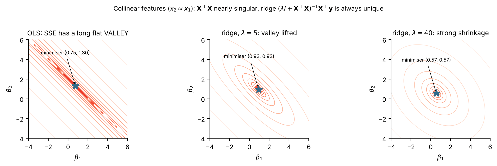
Usually we want $y=\x\T\beta+b$, and the bias may need different treatment from the coefficients. For OLS, add a dummy feature: $\x\T\beta+b=(1\ \ \x\T)\binom{b}{\beta}$. For ridge we penalise $\beta$ but not $b$:
With $\hat\x_i=\x_i-\bar\x$, $\hat y_i=y_i-\bar y$: solve ridge without a bias on the centred data to get $\beta_n$, then set $b_n=\bar y-\bar\x\T\beta_n$.
Linear regression can learn nonlinear functions of $x$: choose basis functions $g_1,\dots,g_k:\mathbb R^d\to\mathbb R$, map $x\mapsto(g_1(x),\dots,g_k(x))$, and run linear regression on the transformed data. Plain regression uses $g_i(x)=x_i$ plus $g_0(x)=1$; a quadratic model adds $g_{ij}(x)=x_ix_j$ for $1\le i\le j\le d$. The model is still linear in the parameters, so all of the OLS/ridge machinery carries over.
the average response of the $k$ training points nearest to $\x$.
The slides call the fitted 1-NN function "piecewise-linear". It is piecewise constant: a step function whose value on each cell is the response of the nearest training point. The horizontal segments in the slide figures show exactly this.
Adding data refines the partition: the number of "parameters" grows with $n$.
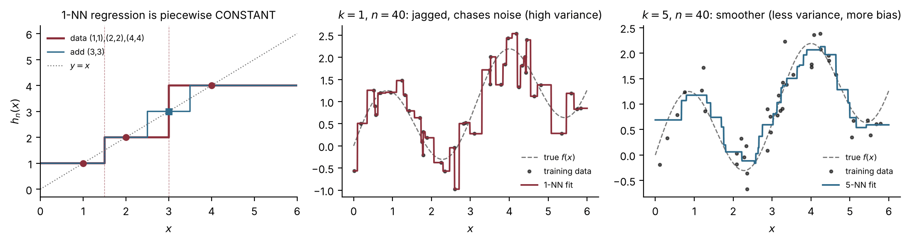
a similarity-weighted average of the training responses.
| Parametric | Non-parametric | |
|---|---|---|
| Parameters | Fixed number | Grows with the data |
| Examples | OLS, ridge | $k$NN, kernel regression |
| Expressiveness | Limited by the model class | Can represent more complex functions |
| Cost | Cheap at test time | Needs lots of data and computation |
"Non-parametric" does not mean "no parameters". It means the model is data-dependent and its number of parameters increases with the data.
A classifier maps an input to a category, learned from labelled examples. Performance measures: accuracy, plus precision, recall and F-measure. Benchmarks: MNIST, ImageNet. For inputs in $\mathbb R^d$ it helps to picture the decision boundary; it can be drawn for $d\le3$, and for larger $d$ people embed the data in 2D/3D first.
For $f(x_1,x_2)=$ red if $x_1\gt5$; green if $x_1\le5$ and $x_2\gt1$; blue if $x_1\le5$ and $x_2\le1$: the boundary is the vertical line $x_1=5$ plus the horizontal ray $x_2=1$ restricted to $x_1\le5$. Three axis-aligned regions, two straight boundary pieces.
Notation: $\x=(x_1,\dots,x_d)$ is one input; $\x_i=(x_{i1},\dots,x_{id})$ is the $i$-th example. So $x_i$ is a component, $x_{ij}$ is component $j$ of example $i$.
$d_1$ = Manhattan, $d_2$ = Euclidean (Minkowski family).
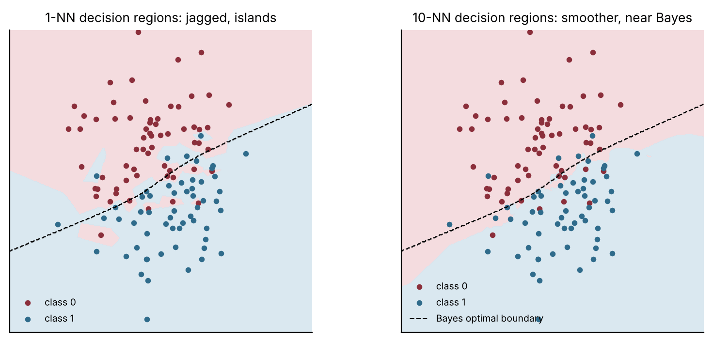
Inputs $\mathcal X=\mathcal X_1\times\dots\times\mathcal X_d$ with each $\mathcal X_i$ finite. NB models the joint $p(X,Y)$ under the conditional independence assumption $p(x_1,\dots,x_d\mid y)=\prod_j p(x_j\mid y)$. It rarely holds, but is often good enough for classification.
$\argmax_{y'}p(y'\mid\x)=\argmax_{y'}p(y',\x)$ because $p(\x)$ does not depend on $y'$.
Limitations: independence is unlikely; counts can be zero (estimates undefined or zero); small counts are unstable. Laplace correction adds pseudo-counts $c_0,c_1\gt0$:
This stabilises NB but does not remove the independence assumption. For real-valued features, take $p(x_j\mid y)$ Gaussian and estimate a class-conditional mean and variance.
Predict the class with the largest score $\x\T\theta_{y'}$. $L$ is concave, so standard numerical methods (e.g. L-BFGS) find the maximum; there is no closed form.
LR is discriminative: it models $p(y\mid\x)$ directly. NB is generative: it models the joint $p(\x,y)$.
If the data is separable there are many separating hyperplanes; SVM picks the one with the maximal margin. The signed distance of $(\x_i,y_i)$ to $\w\T\x+w_0=0$ is $y_i(\w\T\x_i+w_0)/\|\w\|_2$.
$\max_{M,\w,w_0}M$ s.t. $y_i(\w\T\x_i+w_0)/\|\w\|_2\ge M$, equivalently
$\min_{\w,w_0}\tfrac12\|\w\|_2^2$ s.t. $y_i(\w\T\x_i+w_0)\ge1$.
$\min\tfrac12\|\w\|_2^2+C\sum_i\xi_i$ s.t. $y_i(\w\T\x_i+w_0)\ge1-\xi_i$, $\xi_i\ge0$.
Slack $\xi_i$ lets point $i$ violate the margin at cost $C\xi_i$.
The hinge loss $\max(0,1-y\,h(\x))$ upper-bounds the 0/1 loss $\I(y\ne\sgn h(\x))$. Same "loss + regulariser" template as ridge and regularised LR; only the loss changes.
The in-lecture multiple-choice quizzes. Tick every statement you think is correct, then check — each option explains itself.
13 questions: 3 beginner, 5 intermediate, 3 advanced, 2 expert. Click a question to reveal the worked answer.
Later weeks swap each ingredient (bigger hypothesis classes, different losses, gradient-based optimisers) but keep the structure.
A parametric model has a fixed number of parameters regardless of $n$ (OLS, ridge: $d$ coefficients). A non-parametric model is data-dependent, and its number of parameters grows with the data ($k$NN and kernel regression effectively store all $n$ training points).
So no: "non-parametric" means "not a fixed, finite parameter vector", not "no parameters". Trade-off: non-parametric models can represent more complex functions, but need a lot of data and are expensive at prediction time.
kNN is entirely driven by distances. A feature measured on a large scale (income in dollars) dominates one on a small scale (age in decades), so the "nearest" neighbours are effectively chosen by one feature. Standardising each feature to zero mean and unit variance puts them on equal footing.
The curse of dimensionality: the number of samples needed to approximate a function accurately grows exponentially with the dimension, because the space empties out and neighbours stop being local.
Maximise $g(\theta)=70\ln\theta+30\ln(1-\theta)-\lambda(\theta-0.6)^2$. Then
At $\theta=0.6$: $g'=116.7-75=41.7\gt0$. At $\theta=0.7$: the first two terms cancel and $g'=-0.2\lambda\lt0$. $g$ is strictly concave (each term is), so $g'$ is decreasing and its unique root lies in $(0.6,0.7)$.
Numerically: $\lambda=10\Rightarrow0.696$, $\lambda=100\Rightarrow0.669$, $\lambda=1000\Rightarrow0.617$. As $\lambda\to\infty$ the estimate is pulled to the prior guess 0.6.
Use the dummy feature: rows $(1,x_i)$, so $\X=\begin{pmatrix}1&0\\1&1\\1&2\end{pmatrix}$, $\y=(1,2,2)\T$.
Fitted line $y=\tfrac76+\tfrac12x$. Check: residuals are $-\tfrac16,\tfrac13,-\tfrac16$, which sum to zero (as they must with an intercept) and are orthogonal to $x$: $0\cdot(-\tfrac16)+1\cdot\tfrac13+2\cdot(-\tfrac16)=0$.
Before: the cell boundaries are the midpoints 1.5 and 3. $x=2.9$ is nearest to 2, so $\hat y=2$; $x=3.2$ is nearest to 4 (distance 0.8 vs 1.2), so $\hat y=4$. A tiny move in $x$ across 3 jumps the prediction from 2 to 4.
After adding $(3,3)$: midpoints become 1.5, 2.5, 3.5, and both $x=2.9$ and $x=3.2$ are nearest to 3, so both predict 3. The fit is still piecewise constant (not piecewise linear, despite the slide wording), but the steps are finer and closer to $y=x$.
Counts: $n_{\text{Yes}}=n_{\text{No}}=3$, so $\hat p(\text{Yes})=\hat p(\text{No})=\tfrac12$.
| Sunny | Strong | |
|---|---|---|
| Yes | 2/3 | 0/3 |
| No | 1/3 | 2/3 |
MLE: Yes: $\tfrac12\cdot\tfrac23\cdot0=0$. No: $\tfrac12\cdot\tfrac13\cdot\tfrac23=\tfrac19$. Predict No, but the zero count makes $p(\text{Yes}\mid\x)=0$ exactly, an overconfident artefact of a small sample.
Laplace (each feature has 2 values, so denominators become $3+2$): Yes: $\tfrac12\cdot\tfrac35\cdot\tfrac15=0.06$. No: $\tfrac12\cdot\tfrac25\cdot\tfrac35=0.12$. Still No, but now $p(\text{Yes}\mid\x)=0.06/0.18=\tfrac13$ instead of 0.
For a query $\x$, $K_k(\x,\x_i)=1$ exactly when $\x_i$ is no further than the $k$-th nearest neighbour, i.e. when $\x_i\in N_k(\x)$ (ignoring ties), and 0 otherwise. Plugging into $\sum_iK(\x,\x_i)y_i/\sum_iK(\x,\x_i)$ gives $\frac1k\sum_{\x_i\in N_k(\x)}y_i$, the $k$NN average.
Data-dependent: the radius $\max_{\x''\in N_k(\x)}\|\x''-\x\|$ depends on the training set. Non-symmetric: $\x'$ can be among the $k$ nearest neighbours of $\x$ while $\x$ is not among those of $\x'$ (e.g. an outlier whose neighbours all sit in a dense cluster), so $K_k(\x,\x')\ne K_k(\x',\x)$ in general. A Gaussian kernel is symmetric and data-independent.
$R(\beta)=\|\X\beta-\y\|_2^2+\lambda\|\beta\|_2^2$, so $\nabla R=2\X\T(\X\beta-\y)+2\lambda\beta=0$, i.e. $(\X\T\X+\lambda I)\beta=\X\T\y$.
For any $v\ne0$: $v\T(\X\T\X+\lambda I)v=\|\X v\|_2^2+\lambda\|v\|_2^2\ge\lambda\|v\|_2^2\gt0$. So the matrix is positive definite, hence invertible, giving $\beta_n=(\lambda I+\X\T\X)^{-1}\X\T\y$.
The Hessian $2(\X\T\X+\lambda I)$ is positive definite, so $R$ is strictly convex and this stationary point is the unique global minimiser. For OLS ($\lambda=0$) the bound collapses to $\|\X v\|^2\ge0$, which can be 0 for $v$ in the null space of $\X$; that is exactly the collinear "valley".
The conditional log-likelihood is
The first term and the factor $\frac{1}{2\sigma^2}\gt0$ do not depend on $\beta$, so maximising $\ln L_n$ is the same as minimising $\sum_i(y_i-\x_i\T\beta)^2$, the OLS objective. This is the template for "loss = negative log-likelihood": squared loss ↔ Gaussian noise, and (Week 8) the $\ell_2$ penalty ↔ a Gaussian prior.
Maximise $-\sum_i\frac{(x_i-\mu)^2}{2\sigma^2}-\frac{(\mu-c)^2}{2\sigma^2}$: derivative $\frac{1}{\sigma^2}\bigl(\sum_i(x_i-\mu)-(\mu-c)\bigr)=0$ gives $(n+1)\mu=c+\sum_ix_i$.
With true mean $\mu$: $\E\hat\mu=\frac{c+n\mu}{n+1}$, so bias $=\frac{c-\mu}{n+1}$ (zero only if the friend is exactly right). Variance $=\frac{n\sigma^2}{(n+1)^2}\lt\frac{\sigma^2}{n}=\Var(\mu_{\mathrm{ml}})$.
$\mu_{\mathrm{ml}}$ is unbiased with larger variance. The regulariser trades a little bias for less variance, and both effects fade as $n\to\infty$. The MSE comparison depends on how good $c$ is: if $(c-\mu)^2$ is small relative to $\sigma^2$, $\hat\mu$ wins.
Let $J(b,\beta)=\sum_i(\x_i\T\beta+b-y_i)^2+\lambda\|\beta\|^2$. For fixed $\beta$, $\partial J/\partial b=2\sum_i(\x_i\T\beta+b-y_i)=0$ gives $b=\bar y-\bar\x\T\beta$ (the penalty does not involve $b$, which is why this is clean).
Substitute back: $\x_i\T\beta+b-y_i=\x_i\T\beta+\bar y-\bar\x\T\beta-y_i=(\x_i-\bar\x)\T\beta-(y_i-\bar y)=\hat\x_i\T\beta-\hat y_i$. So the profiled objective is $\sum_i(\hat\x_i\T\beta-\hat y_i)^2+\lambda\|\beta\|^2$: ridge on centred data, no bias. Minimise it for $\beta_n$, then $b_n=\bar y-\bar\x\T\beta_n$.
Why not just add a dummy feature? Then the penalty would shrink $b$ too, making predictions depend on where the origin of $y$ is. Penalising $b$ is not translation-equivariant; the centring trick is.
Equivalence. The constraint is invariant to rescaling $(\w,w_0)\mapsto(s\w,sw_0)$, $s\gt0$, since the hyperplane does not change. So we may fix the scale by requiring $\min_iy_i(\w\T\x_i+w_0)=1$. Then the margin is $M=1/\|\w\|$, and maximising $1/\|\w\|$ is the same as minimising $\tfrac12\|\w\|^2$ subject to $y_i(\w\T\x_i+w_0)\ge1$ (at the optimum some constraint is tight, so the normalisation holds).
Template. At the soft-margin optimum $\xi_i=\max(0,1-y_i(\w\T\x_i+w_0))$, so the problem is $\min\ \tfrac12\|\w\|^2+C\sum_i\text{hinge}_i$, i.e. (dividing by $C$) $\sum_i\text{loss}_i+\frac{1}{2C}\|\w\|^2$. Ridge is squared loss + $\lambda\|\beta\|^2$; regularised LR is log-loss + $\lambda\|\theta\|^2$; SVM is hinge loss + $\frac1{2C}\|\w\|^2$. All are "empirical risk + $\ell_2$ regulariser" (Week 2's ERM), differing only in the loss. The hinge upper-bounds the 0/1 loss, which is why it is a sensible surrogate (Week 3 makes the surrogate idea central).
Where this week sits. Week 1 gave a catalogue of algorithms. Week 2 does three things: an unsupervised method (PCA), a unifying theory showing last week's algorithms are all the same thing (empirical risk minimisation), and the practical question of which model to actually pick (model selection).
Unsupervised learning has three main jobs: clustering, density estimation and dimension reduction. PCA does the last. The motivation: differences between data points often come mainly from a few directions. If points fluctuate along a line, projecting onto the line keeps the signal and filters out noise. Even with richer structure (two clusters along one axis) the projection is lossy but can keep what you care about, such as cluster membership. Further directions are added incrementally, each orthogonal to the previous ones and maximising the remaining projected variance.
PCA finds the orthogonal directions, the principal components, along which the data has the largest variance; they span a lower-dimensional subspace onto which the data is projected. Information about position in the remaining orthogonal directions is lost.
If the unit vector $\vv$ maximises the variance of the projections of $\x_1,\dots,\x_n\in\mathbb R^d$ onto $\vv$, then
and $\lambda$ is the projected variance. The top $k$ PCs are the eigenvectors with the $k$ largest eigenvalues.
Properties. $\Sigma$ is symmetric positive semi-definite, so the PCs are orthogonal and all $\lambda_i\ge0$; projections onto two different PCs are uncorrelated.
The slides say the projections are "linearly uncorrelated" but that this "does not imply that the projections are uncorrelated". The intended point is standard: zero correlation does not imply independence. One projection can still be a nonlinear function of another (points on a parabola: $u$ and $u^2$ are uncorrelated). PCA only removes linear dependence.
$\Sigma$ uses centred data; forget to subtract $\bar\x$ and the top "component" points at the mean. PCA is also not scale-invariant: standardise features measured in different units, or the largest-variance feature dominates.
Input $\x_1,\dots,\x_n$, target dimension $k$.
1. $\vv_1,\dots,\vv_k\leftarrow$ top $k$ PCs.
2. $\zv_i\leftarrow\bigl((\x_i-\bar\x)\T\vv_1,\dots,(\x_i-\bar\x)\T\vv_k\bigr)$.
Input $\vv_{1:k}$, $\zv_{1:n}$.
$\tilde\x_i\leftarrow\bar\x+\sum_{j=1}^kz_{ij}\vv_j\approx\x_i$.
Exact iff $\lambda_{k+1}=\dots=\lambda_d=0$.
In practice, take the SVD of the centred design matrix $\bar\X$ (row $i$ is $\x_i-\bar\x$): $\bar\X=U\Lambda V\T$. Since $\Sigma=\frac1n\bar\X\T\bar\X=\frac1nV\Lambda\T U\T U\Lambda V\T=VDV\T$ with $D=\frac1n\Lambda^2$, we get $\Sigma V=VD$: the columns of $V$ are the PCs and the eigenvalues are $\sigma_j^2/n$. This avoids forming $\Sigma$ explicitly, which is numerically better.
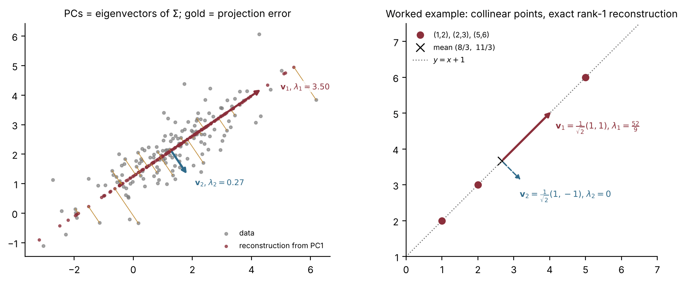
Treat an $h\times w$ image as $h$ data points in $\mathbb R^w$ (its rows) and keep $k$ PCs.
Store $\zv_{1:h}\in\mathbb R^k$ ($hk$ numbers), $\vv_{1:k}\in\mathbb R^w$ ($kw$) and $\bar\x\in\mathbb R^w$ ($w$):
Slide example: a $512\times512\times3$ image as $512\times1536$, $k=50$: $\frac{786432}{51\cdot1536+50\cdot512}=\frac{786432}{103936}=7.57$.
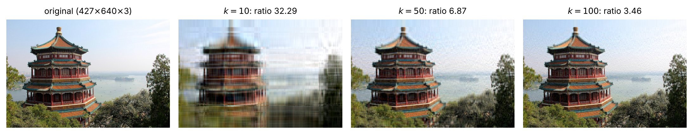
PCA is unsupervised: it maximises total variance, not class separation. The best direction for separating two classes can be low-variance and get thrown away (that is what LDA is for). 0 vs 1 separates well in 2D; 3 vs 9 overlaps heavily.
| Feature selection | choose a subset of variables: Lasso, LARS, forward/backward selection |
|---|---|
| Feature extraction | embed into a lower-dimensional space: PCA, kernel PCA, Isomap, MDS, t-SNE, LDA, autoencoders (the nonlinear generalisation of PCA, later in the course) |
Can OLS, ridge, $k$NN, basis functions, kernel methods, NB, LR and SVM be analysed in one framework? Yes: almost all are empirical risk minimisation. Fundamental questions: approximation (does the class contain a good model?), identification, generalisation (the course's focus), sample complexity and computational complexity.
We want to minimise $R$, but can only compute $R_n$. Learning problems differ only in the domain $\mathcal Z$, the space $\Hyp$ and the loss $L$.
Bob swaps $(h(x)-y)^2$ for $(h(x)-y)^3$. Don't. A cubic is unbounded below: under-predicting makes the loss negative and arbitrarily so, so ERM pushes predictions to $-\infty$ and has no minimiser. It also rewards under-prediction and is not minimised at zero error. If you want a cubic, use $|h(x)-y|^3$. General lesson: a loss must be bounded below and minimised by a correct prediction. (For comparison: $|\cdot|^2$ targets the conditional mean, $|\cdot|^1$ the conditional median.)
| Problem | Loss | Best possible predictor (minimises expected risk) |
|---|---|---|
| Classification | 0/1: $\I(h(x)\ne y)$ | Bayes optimal classifier $h^*(x)=\argmax_yP(y\mid x)$ |
| Regression | quadratic: $(h(x)-y)^2$ | Regression function $h^*(x)=\E(Y\mid x)$ |
| Linear regression | quadratic, $\Hyp=\{\x\T\beta\}$ | $\beta^*=\E(XX\T)^{-1}\E(XY)$ (empirical version: normal equations) |
| Density estimation | log-loss $-\ln p(x\mid h)$ | ERM $=$ MLE |
Proof idea (both optimal predictors). Condition on $X$: $\E L=\E_X\E_{Y\mid X}[\cdot]$, and $h(x)$ can be chosen separately for each $x$. For 0/1 loss the inner term is $P(Y\ne h(x)\mid x)=1-P(h(x)\mid x)$, minimised by the most probable class. For squared loss the inner term is $h(x)^2-2h(x)\E(Y\mid x)+\E(Y^2\mid x)$, a quadratic minimised at $h(x)=\E(Y\mid x)$.
Revisiting Week 1. $k$NN, NB and LR all estimate $P(Y\mid X)$ to approximate the Bayes classifier: $k$NN nonparametrically and locally, NB generatively, LR discriminatively. $k$NN regression approximates $\E(Y\mid x)$ by averaging neighbours' outputs; as $k\to\infty$ and $n/k\to\infty$, $h_n(x)\to h^*(x)$ for any $P(X,Y)$.
Bigger $\Hyp$: smaller approximation error, bigger estimation error (bias–variance in different clothes).
So ERM is consistent for finite $\Hyp$. For infinite $\Hyp$, use VC dimension or Rademacher complexity.
The number of parameters does not measure complexity. A one-parameter family can have infinite VC dimension, and heavily over-parameterised networks can still generalise (see double descent, Week 9).
Choosing $k$ for $k$NN shows the pattern: training error falls monotonically as $1/k$ grows (it is exactly 0 at $k=1$), while test error is U-shaped. A simple model underfits (misses regularities); a complex model overfits (fits irregularities).
$Y'$ is the prediction (random through the training set), $Y\sim P(Y\mid x)$ the true output. This is a property of the model class, not of one fitted model.
The cross terms vanish only because $Y'$ (built from training data) is independent of the test response $Y$. The noise term $\sigma^2$ is a floor no model can beat.
Complexity is $1/k$: as it grows, bias falls (neighbours are closer) and variance rises (fewer noise terms averaged).
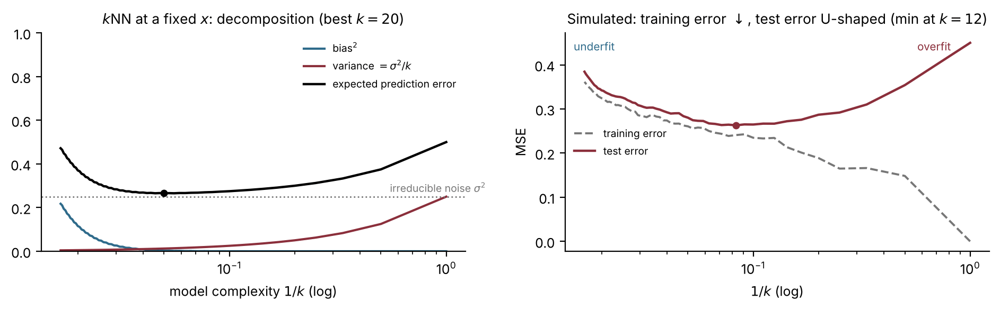
Model selection covers choosing between model classes, tuning hyperparameters ($\lambda$, $k$) and feature selection.
Split into training $\mathcal T$ and validation $\mathcal D$; train each $\mathcal M_i$ on $\mathcal T$, test on $\mathcal D$, keep the best.
Split into $K$ folds; for each $\mathcal M_i$ train $K$ times on $K-1$ folds and test on the held-out fold; keep the best average. $K\times$ the cost but uses all the data.
A validation set (i) consumes data you could train on and (ii) becomes an optimistically biased estimate once you have selected on it. Report generalisation on a separate test set.
Variants: leave-one-out CV = $n$-fold; stratified CV keeps class proportions per fold. Recommendation: 10-fold stratified CV when the dataset is reasonably large and compute allows. Alternatives: analytic approximations (AIC, BIC, MDL) and resampling (bootstrap).
13 questions: 3 beginner, 4 intermediate, 4 advanced, 2 expert. Click a question to reveal the worked answer.
PCA finds orthogonal unit directions $\vv_1,\vv_2,\dots$ along which the projected data has maximal variance; they are the eigenvectors of the empirical covariance $\Sigma$, ordered by eigenvalue (the projected variance).
Centring: $\Sigma$ is defined with $\x_i-\bar\x$. Without it, the "variance" includes the offset of the mean from the origin, and the top direction tends to point at $\bar\x$ instead of along the spread. Standardising: PCA is not scale-invariant. Measure one feature in millimetres instead of metres and its variance grows by $10^6$, so it dominates PC1 for no real reason.
$R_n(h)=\frac1n\sum_iL(z_i,h)$ is the average loss on the training sample; $R(h)=\E L(Z,h)$ is the average loss over the unknown data distribution. ERM picks $h_n=\argmin_{h\in\Hyp}R_n(h)$.
We want small expected risk (generalisation), but $P(Z)$ is unknown, so we minimise the empirical risk as a proxy. Learning theory asks when $R(h_n)$ is close to $\inf_{h\in\Hyp}R(h)$.
Validation split: cheap (train each model once) but wastes data and gives a noisy estimate. $K$-fold CV: every example is used for both training and validation; costs $K$ trainings per model. LOOCV is $n$-fold CV, one example per fold (expensive, low bias).
Once you pick the model with the best validation/CV score, that score is optimistically biased: you selected it partly because it was lucky on that data. An untouched test set gives an unbiased estimate of the chosen model's generalisation.
Mean $(\tfrac83,\tfrac{11}3)$. Centred points are $a_i(1,1)$ with $a=-\tfrac53,-\tfrac23,\tfrac73$, so $\Sigma=\frac13\sum_ia_i^2\begin{pmatrix}1&1\\1&1\end{pmatrix}=\frac13\cdot\frac{78}{9}\begin{pmatrix}1&1\\1&1\end{pmatrix}=\frac{26}9\begin{pmatrix}1&1\\1&1\end{pmatrix}$.
$\begin{pmatrix}1&1\\1&1\end{pmatrix}$ has eigenvalues 2 and 0, so $\lambda_1=\tfrac{52}9$ with $\vv_1=\tfrac1{\sqrt2}(1,1)$ and $\lambda_2=0$ with $\vv_2=\tfrac1{\sqrt2}(1,-1)$.
$z_i=a_i(1,1)\cdot\tfrac1{\sqrt2}(1,1)=\sqrt2a_i$: $-\tfrac{5\sqrt2}3,-\tfrac{2\sqrt2}3,\tfrac{7\sqrt2}3$. Check: $\frac13\sum z_i^2=\frac13\cdot2\cdot\frac{78}9=\frac{52}9=\lambda_1$. Reconstruction $\bar\x+z_1\vv_1=(\tfrac83,\tfrac{11}3)-\tfrac53(1,1)=(1,2)$, exact, because $\lambda_2=0$.
Ratio $=\frac{hw}{(k+1)w+kh}=\frac{786432}{51\cdot1536+50\cdot512}=\frac{786432}{103936}\approx7.57$.
Storage is saved iff $(k+1)w+kh\lt hw$, i.e. $k(w+h)\lt w(h-1)$, so $k\lt\frac{w(h-1)}{w+h}=\frac{1536\cdot511}{2048}=383.25$. Any $k\le383$ compresses; at $k=384$ you store more numbers than the image (and you would be keeping more components than there is meaningful variance for anyway).
3NN uses $0.8,1.0,1.2$: average $f=(0.64+1+1.44)/3=1.0267$, bias $0.0267$, bias$^2\approx0.0007$, variance $\sigma^2/3=0.333$. Error $\approx0.333+0.0007+1=1.334$.
5NN adds $0.6,1.4$: average $f=(0.36+0.64+1+1.44+1.96)/5=1.08$, bias $0.08$, bias$^2=0.0064$, variance $0.2$. Error $\approx0.2+0.0064+1=1.206$.
5NN wins: the variance saving (0.133) beats the extra bias$^2$ (0.006). With a more curved $f$ or noise-free data the balance would tip the other way. Bias is positive because $x^2$ is convex, so the average of $f$ over a symmetric neighbourhood overshoots $f(x)$.
Squared loss is minimised in expectation by $\E(Y\mid x)$; absolute loss by the conditional median. A sensible cubic is $|h(x)-y|^3$: non-negative, zero only at a perfect fit, convex.
Projected variance: $\frac1n\sum_i(\vv\T(\x_i-\bar\x))^2=\vv\T\bigl[\frac1n\sum_i(\x_i-\bar\x)(\x_i-\bar\x)\T\bigr]\vv=\vv\T\Sigma\vv$.
Without a constraint, scaling $\vv$ by $c$ scales $\vv\T\Sigma\vv$ by $c^2$, so the maximum is $+\infty$: the constraint picks out a direction. Lagrangian $\vv\T\Sigma\vv-\lambda(\vv\T\vv-1)$ has gradient $2\Sigma\vv-2\lambda\vv=0$, so any stationary $\vv$ is a unit eigenvector, with objective $\vv\T\Sigma\vv=\lambda$. The maximum is therefore the largest eigenvalue, attained at its eigenvector.
For PC2, add $\vv\perp\vv_1$; because $\Sigma$ is symmetric its eigenvectors are orthogonal, and the answer is the second eigenvector.
0/1 loss. $\E\,\I(Y\ne h(X))=\E_X\bigl[P(Y\ne h(X)\mid X)\bigr]=\E_X\bigl[1-P(h(X)\mid X)\bigr]$. The value $h(x)$ only affects the integrand at that $x$, so minimise pointwise: choose $h(x)$ maximising $P(h(x)\mid x)$.
Squared loss. $\E(h(X)-Y)^2=\E_X\bigl[h(X)^2-2h(X)\E(Y\mid X)+\E(Y^2\mid X)\bigr]$. Pointwise in $x$ this is a quadratic $a^2-2a\,m+c$ in $a=h(x)$, minimised at $a=m=\E(Y\mid x)$; the minimum value is $\Var(Y\mid x)$, the irreducible noise.
Both rely on the same trick: condition on $X$, then optimise separately for each $x$.
Write $Y'-Y=(Y'-\E Y')+(\E Y'-\E Y)+(\E Y-Y)$ and square. The three squares give variance, bias$^2$ and noise. Cross terms:
If you evaluated on a training point, $Y'$ and $Y$ would be positively correlated and the training error would underestimate the expected error, which is why training error falls monotonically while test error is U-shaped.
With $\bar\X=U\Lambda V\T$ ($U,V$ orthogonal, $\Lambda$ diagonal with singular values $\sigma_j$):
Multiplying on the right by $V$: $\Sigma V=VD$, so each column $\vv_j$ of $V$ is an eigenvector with eigenvalue $D_{jj}=\sigma_j^2/n$. The codes are $\zv_i=(\x_i-\bar\x)\T V_{:,1:k}$, i.e. the first $k$ columns of $U\Lambda$. Computing the SVD directly avoids squaring the condition number, which forming $\Sigma$ would do.
Need $2\sqrt{\frac{\ln1000+\ln(2/0.05)}{2n}}\le0.05$. Here $\ln1000=6.908$, $\ln40=3.689$, sum $10.597$. So $\frac{10.597}{2n}\le0.025^2=0.000625$, i.e. $n\ge\frac{10.597}{0.00125}\approx8478$.
Observations: the dependence on $|\Hyp|$ is only logarithmic, and the rate is $O(1/\sqrt n)$. But for a neural net $|\Hyp|$ is infinite. Counting parameters (e.g. discretising each weight) gives vacuous bounds, and the course stresses that parameter count is not complexity: a single-parameter family like $\sgn(\sin(\theta x))$ has infinite VC dimension, while huge networks generalise well in practice. Explaining that needs other tools (implicit regularisation of SGD, norm-based complexity), which connects to double descent in Week 9.
Take two classes in $\mathbb R^2$: class A at $(t,+0.1)$ and class B at $(t,-0.1)$ with $t$ uniform on $[-10,10]$. The variance along $x_1$ is about 33; along $x_2$ it is 0.01. PC1 is the $x_1$ axis, and projecting onto it maps both classes onto the same interval: classification becomes chance. The discriminative direction ($x_2$) has tiny variance and is discarded.
PCA regularises by assuming low-variance directions are noise. That is often true (pixel noise, sensor jitter), and then dropping them stops a classifier from fitting irregularities. When the label actually lives in a low-variance direction, the assumption is wrong and PCA adds bias rather than removing variance. Supervised alternatives (LDA) choose directions using the labels; in practice, tune $k$ by cross validation rather than by "variance explained".
The brain does perception, control and reasoning with roughly 86 billion neurons and 100 trillion synapses. A neuron receives signals through dendrites, combines them in the soma and fires along the axon; synapses are slow but small, low-power and adaptive, with all-or-none activation. Connectionism asks how computation emerges from such units. An ANN is a network of simple artificial neurons, i.e. a complex mathematical function; architectures include feedforward, convolutional, recurrent and residual nets.
| Year | Who | What |
|---|---|---|
| 1943 | McCulloch & Pitts | Linear threshold neuron; "a logical calculus of nervous activity" |
| 1949 | Hebb | Hebbian learning: cells that fire together wire together |
| 1960 | Widrow & Hoff | ADALINE / MADALINE |
| 1962 | Rosenblatt | Principles of Neurodynamics: the perceptron |
| 1969 | Minsky & Papert | Perceptrons: what single-layer perceptrons cannot do |
Minsky and Papert proved limits of perceptrons. Readers over-generalised them to all neural networks, which contributed to the first AI winter. The limits are real; the over-generalisation was not.
The decision boundary $\w\T\x=0$ is a hyperplane: the classifier is linear. The perceptron is Rosenblatt's learning algorithm for this single neuron, still used for huge, very sparse feature vectors.
The perceptron deck uses $\sgn(0)=-1$. The Hopfield deck outputs $+1$ when the weighted sum is $\ge0$ and its worked example uses $\sgn(0)=+1$. Each deck is self-consistent; do not carry the convention across. In the Hopfield retrieval example below, the choice at 0 changes the answer.
Input $(\x_i,y_i)\in\mathbb R^{d+1}\times\{-1,+1\}$, $\eta\in(0,1]$. Initialise $\w$; while some example is misclassified, pick one and set
Why this update? Error-correction learning: change $\w$ only on mistakes. Correct classification means $y_i\x_i\T\w\gt0$, and after the update $y_i\x_i\T(\w+\eta y_i\x_i)=y_i\x_i\T\w+\eta\|\x_i\|^2$, which is larger. It improves the margin on that example, not necessarily on others.
If the data is linearly separable ($\exists\w^*$ with $y_i\x_i\T\w^*\gt0\ \forall i$), let $R=\max_i\|\x_i\|$ and $\gamma=\min_i y_i\w^{*\top}\x_i/\|\w^*\|$ (the margin). From $\w_0=\mathbf 0$ the perceptron finds a separating hyperplane after at most
$\eta$ and $\|\w^*\|$ cancel; the bound does not depend on $d$ or $n$ either. Only the geometry matters: radius $R$ and margin $\gamma$. A small margin can mean very many updates ($\propto1/\gamma^2$).
Remarks. Convergence holds from any initial $\w$ if the data is separable (good guesses converge faster). $\eta$ affects speed, but a good value is hard to choose. The bias is learned through the dummy feature, though (as with ridge) it sometimes needs separate treatment.
Weaknesses. The separator found is arbitrary (depends on initialisation and update order; contrast SVM's max-margin choice). Convergence is slow when the margin is small. On non-separable data the algorithm never stops, and that can be hard to detect.
| $x_1$ | $x_2$ | XOR |
|---|---|---|
| 0 | 0 | $-1$ |
| 0 | 1 | $+1$ |
| 1 | 0 | $+1$ |
| 1 | 1 | $-1$ |
Suppose $w_0+w_1x_1+w_2x_2$ works. Then $w_0\le0$ (from $(0,0)$), $w_0+w_2\gt0$, $w_0+w_1\gt0$, and $w_0+w_1+w_2\le0$. Adding the middle two: $w_0+(w_0+w_1+w_2)\gt0$. But both bracketed terms are $\le0$, so their sum is $\le0$. Contradiction.
XOR is representable with a hidden layer, e.g. XOR $=$ OR $\wedge\neg$AND: the motivation for multilayer networks (Week 4).
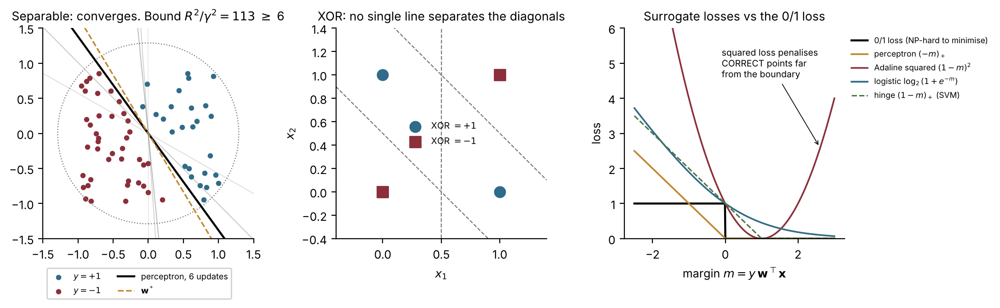
is NP-hard: informally, there is no efficient algorithm for it in general.
Two ways out: (1) hand-code powerful features (hard, and may still not give separability), or (2) optimise a surrogate objective that is easy to minimise and well correlated with classification error. Idea 2 is the basis of everything that follows.
Widrow and Hoff (1960); also called the LMS, Widrow–Hoff or delta rule. More stable than the perceptron on non-separable data.
One gradient step on the squared loss $f(\w)=(\w\T\x-y)^2$ for a random example.
Why it descends. With $\Delta\w=\eta(y-\w\T\x)\x$: $f(\w+\Delta\w)\approx f(\w)+\nabla f\T\Delta\w=f(\w)-2\eta(y-\w\T\x)^2\|\x\|^2\le f(\w)$. Too small $\eta$ barely helps; too large voids the first-order argument. With suitable $\eta$ it converges to the SSE minimiser. Stop after a fixed number of iterations or when the recent average loss stops improving.
Mini-batch version: $\Delta\w=\frac1{|S|}\sum_{(\x,y)\in S}\eta(y-\w\T\x)\x$; the batch version uses the whole training set. This is the ancestor of the mini-batch SGD used for every network later.
Squared loss also penalises correctly classified points far from the boundary ($y\w\T\x\gg1$), so such points can drag the fit away from a valid separator. In the worst case the error can approach 0.5 even on separable data, though in practice it is usually much better.
$\sigma(\w\T\x)=p(y=1\mid\x,\w)$; the update reduces the log-loss $-\ln p(y_i\mid\x_i,\w)$.
Perceptron and Adaline use $y\in\{-1,+1\}$; the logistic version uses $\{0,1\}$. The demo code relabels with Y[Y == -1] = 0. Mixing encodings silently produces nonsense.
| Perceptron | Adaline | Logistic | |
|---|---|---|---|
| Loss | 0/1 | squared $(\w\T\x-y)^2$ | log-loss |
| Labels | $\{-1,+1\}$ | $\{-1,+1\}$ | $\{0,1\}$ |
| Updates on | mistakes only | every example | every example |
| Separable data | finds a separator | may not | may not |
| Non-separable | never converges | converges (suitable $\eta$) | converges (suitable $\eta$) |
$y-\sgn(\w\T\x)$ is $2y$ on a mistake and $0$ otherwise, so the unified form is the original rule with $\eta\to2\eta$. The convergence bound does not depend on $\eta$, so nothing of substance changes.
w = np.zeros(d) # Perceptron
for s in range(1000):
i = np.random.randint(n)
if Y[i] != np.sign(w @ X[i,]):
w += 0.2 * Y[i] * X[i,]
w = np.zeros(d) # Adaline
for s in range(1000):
i = np.random.randint(n)
w += 0.2 * (Y[i] - w @ X[i,]) * X[i,]
Y[Y == -1] = 0 # Logistic
w = np.zeros(d)
for s in range(1000):
i = np.random.randint(n)
w += 0.2 * X[i,] * (Y[i] - expit(w @ X[i,]))Sample errors on separable data ($n=200$, $d=10$): perceptron 0.075, Adaline 0.06, logistic 0.025. The perceptron's nonzero error is an artefact of picking a random index (most of the 1000 steps do nothing); always picking a misclassified example gives zero error, as the theorem promises.
(i) The text says the true $\w$ is drawn from $[0,1]$ but the code uses w = np.ones(d); the data is separable either way. (ii) np.sign(0) = 0, whereas the lecture's $\sgn(0)=-1$ (probability-zero event with continuous features).
Little (1974) and Hopfield (1982; Nobel Prize in Physics 2024). A model of human memory: a content-addressable (associative) memory of binary threshold units. Memorise patterns by setting weights; retrieve by initialising the units to a partial or noisy pattern and running until the state settles.
Start at 0; for each pattern $\av$, $w_{ij}\leftarrow w_{ij}+a_ia_j$ ($i\ne j$). Equivalently, for patterns $\av_1,\dots,\av_n$:
Agreeing units strengthen their connection; patterns can be added incrementally.
$a_i^2=1$ always, so a self-weight would add a constant $n$ to each unit's input and make every state self-reinforcing. The slide's remark that Hebbian learning "is equivalently updating perceptron $i$ with example $(\av,a_i)$" is about the form $\w_i\leftarrow\w_i+a_i\av$; unlike the perceptron it is applied unconditionally.
$\av_1=(-1,1,1,-1,1)$ and $\av_2=(1,-1,1,-1,1)$ give
Pairs on which the patterns agree in relative sign reinforce to $\pm2$; pairs on which they disagree cancel (e.g. $w_{13}=(-1)(1)+(1)(1)=0$).
Retrieval. Set the states to the probe, then repeatedly update $a_i\leftarrow\sgn(\w_{\cdot i}\cdot\av)$ until nothing changes. Scheduling: synchronous (all at once; biologically unrealistic), asynchronous (random single neuron), or semi-random (every node once per sweep in random order; common in practice).
| Update | New state |
|---|---|
| $a_3=\sgn((0,0,0,-2,2)\cdot(1,1,1,1,1))=\sgn(0)=1$ | $(1,1,1,1,1)$ |
| $a_1=\sgn(-2)=-1$ | $(-1,1,1,1,1)$ |
| $a_5=\sgn((0,0,2,-2,0)\cdot(-1,1,1,1,1))=\sgn(0)=1$ | $(-1,1,1,1,1)$ |
| $a_2=\sgn(2)=1$ | $(-1,1,1,1,1)$ |
| $a_4=\sgn((0,0,-2,0,-2)\cdot(-1,1,1,1,1))=\sgn(-4)=-1$ | $(-1,1,1,-1,1)$ |
A second sweep changes nothing: the net recovers $\av_1$.
The probe is Hamming distance 2 from both stored patterns. Only the update order and $\sgn(0)=+1$ select $\av_1$. With $\sgn(0)=-1$ the first update flips $a_3$ and the net settles somewhere else entirely (see Q3.12).
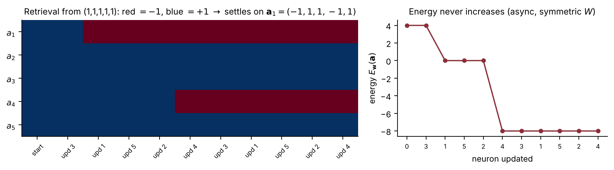
Memorisation makes each stored pattern a local minimum (an attractor). Retrieval moves a noisy pattern downhill to a nearby minimum. With symmetric weights, zero diagonal and asynchronous updates, a flip never increases $E$, and with finitely many states the dynamics must reach a fixed point.
The in-lecture multiple-choice quizzes. Tick every statement you think is correct, then check — each option explains itself.
13 questions: 3 beginner, 4 intermediate, 4 advanced, 2 expert. Click a question to reveal the worked answer.
It computes $f(\x)=\sgn(\w\T\x)$: a weighted sum followed by a hard threshold, outputting $\pm1$ (with $\sgn(0)=-1$ in the perceptron deck). The decision boundary $\{\x:\w\T\x=0\}$ is a hyperplane, so the classifier is linear. The bias is absorbed by appending a dummy input $x_0=1$, so $w_0$ is learned like any other weight.
Memorise: Hebbian rule $w_{ij}\leftarrow w_{ij}+a_ia_j$ for each stored pattern (zero diagonal, symmetric). Retrieve: initialise the states to a partial or noisy probe and repeatedly set $a_i\leftarrow\sgn(\sum_jw_{ji}a_j)$ until no unit changes; the fixed point is (hopefully) the stored pattern nearest the probe.
Schedules: synchronous (all units at once), asynchronous (one random unit at a time), semi-random (all units once per sweep in random order, the common practical choice).
| Step | Example | Score $\w\T\x$ | Action | New $\w$ |
|---|---|---|---|---|
| 1 | A $(1,2,1),+$ | 0 | mistake: $+\x$ | $(1,2,1)$ |
| 2 | B $(1,0,-1),-$ | 0 | mistake: $-\x$ | $(0,2,2)$ |
| 3 | C $(1,1,-2),-$ | $-2$ | correct | — |
| 4 | D $(1,-1,1),-$ | 0 | mistake: $-\x$ | $(-1,3,1)$ |
| 5–6 | A, B | 6, $-2$ | correct | — |
| 7 | C | 0 | mistake: $-\x$ | $(-2,2,3)$ |
| 8+ | D, A, B, C | $-1,5,-5,-6$ | all correct | stop |
Final boundary: $-2+2x_1+3x_2=0$, after 4 updates. Note that a zero score counts as a mistake under the $y\w\T\x\le0$ rule used in the convergence proof.
Adaline: residual $y-\w\T\x=1-0=1$, so $\w\leftarrow(0,0)+0.1\cdot1\cdot(1,2)=(0.1,0.2)$. New prediction $\w\T\x=0.1+0.4=0.5$; the loss falls from $(0-1)^2=1$ to $(0.5-1)^2=0.25$.
Logistic: $\sigma(0)=0.5$, residual $1-0.5=0.5$, so $\w\leftarrow(0.05,0.1)$; new $p(y=1\mid\x)=\sigma(0.25)\approx0.562$, up from 0.5, so the log-loss falls from $\ln2\approx0.693$ to $\approx0.577$.
Same template, $(\text{target}-\text{prediction})\x$; the logistic step is smaller because $\sigma$ caps the prediction in $(0,1)$.
$W=\av_1\av_1\T+\av_2\av_2\T$ with the diagonal zeroed:
$W\av_1=(2,2,-2,-2)$, whose signs are $\av_1$; $W\av_2=(2,-2,2,-2)$, whose signs are $\av_2$. Both are fixed points. Entries $(1,2),(1,3),(2,4),(3,4)$ cancel because the two patterns disagree in relative sign there. Note $-\av_1$ and $-\av_2$ are also fixed points ($W(-\av)=-W\av$): Hopfield nets always store negatives too.
$t\le R^2/\gamma^2=4/0.01=400$ updates.
Scaling the data by 10 scales $R$ to 20 and $\gamma$ to 1, so $R^2/\gamma^2$ is unchanged: the bound is scale-invariant. Halving $\eta$ changes nothing either, because $\eta$ cancels in the proof (from $\w_0=\mathbf 0$ the whole trajectory just rescales, and the sign of $\w\T\x$ is unaffected). Only the shape of the data (radius relative to margin) matters.
Let $\w_0=\mathbf0$ and suppose the $(t+1)$-th update uses misclassified $(\x_i,y_i)$, so $y_i\w_t\T\x_i\le0$.
Lower bound on alignment: $\w_{t+1}\T\w^*=\w_t\T\w^*+\eta y_i\x_i\T\w^*\ge\w_t\T\w^*+\eta\gamma\|\w^*\|$ by definition of $\gamma$. Induction: $\w_t\T\w^*\ge t\eta\gamma\|\w^*\|$.
Upper bound on norm: $\|\w_{t+1}\|^2=\|\w_t\|^2+2\eta y_i\w_t\T\x_i+\eta^2\|\x_i\|^2\le\|\w_t\|^2+\eta^2R^2$. This is where misclassification is used: the cross term is $\le0$. Induction: $\|\w_t\|\le\sqrt t\,\eta R$.
Cauchy–Schwarz: $t\eta\gamma\|\w^*\|\le\w_t\T\w^*\le\|\w_t\|\|\w^*\|\le\sqrt t\eta R\|\w^*\|$, so $\sqrt t\le R/\gamma$. The bound counts updates, not passes over the data.
Impossibility. Need $w_0\le0$, $w_0+w_2\gt0$, $w_0+w_1\gt0$, $w_0+w_1+w_2\le0$. Summing the two strict inequalities: $2w_0+w_1+w_2\gt0$. Summing the other two: $2w_0+w_1+w_2\le0$. Contradiction.
Construction (XOR $=$ OR $\wedge\neg$AND), with $\sgn(u)=+1$ for $u\gt0$:
The hidden layer maps the four points to a space where they are linearly separable: the core idea behind MLPs and learned features (Week 4).
Log-loss with $p=\sigma(u)$, $u=\w\T\x$: $\ell=-y\ln p-(1-y)\ln(1-p)$. Using $\sigma'=\sigma(1-\sigma)$:
so $\nabla_\w\ell=(\sigma(\w\T\x)-y)\x$ and $\w-\eta\nabla\ell$ is exactly the update.
Squared loss $(\w\T\x-y)^2$ has gradient $2(\w\T\x-y)\x$, so the Adaline rule is a gradient step with step size $\eta/2$. Both are SGD on their losses: Week 4 makes this formal (and shows the perceptron is SGD on $(-y\w\T\x)_+$).
Update unit $k$ from $a_k$ to $a'_k=\sgn(h_k)$ with $h_k=\sum_{j\ne k}w_{kj}a_j$. With symmetric weights and $w_{kk}=0$, the terms of $E$ that involve $a_k$ are $-\frac12\cdot2a_k\sum_jw_{kj}a_j=-a_kh_k$. So
If $a_k$ does not change, $\Delta E=0$. If it flips, then $a'_k$ has the sign of $h_k$ and $a'_k-a_k=2a'_k$, so $\Delta E=-2a'_kh_k=-2|h_k|\le0$.
Symmetry is used to combine $w_{kj}a_ka_j$ and $w_{jk}a_ja_k$ into one $h_k$; without it there is no energy function and the dynamics can cycle. Zero diagonal removes a self-term that would otherwise appear. Since $E$ is bounded below on the finite set $\{\pm1\}^m$, the dynamics reach a fixed point. (Synchronous updates can oscillate between two states.)
$a_3$: input $(0,0,0,-2,2)\cdot(1,1,1,1,1)=0\Rightarrow-1$, state $(1,1,-1,1,1)$. $a_1$: input $-2\Rightarrow-1$, state $(-1,1,-1,1,1)$. $a_5$: $(0,0,2,-2,0)\cdot\av=-2-2=-4\Rightarrow-1$, state $(-1,1,-1,1,-1)$. $a_2$: $(-2)(-1)=2\Rightarrow1$. $a_4$: $(0,0,-2,0,-2)\cdot\av=2+2=4\Rightarrow1$. A second sweep changes nothing.
Final state $(-1,1,-1,1,-1)=-\av_2$: the negation of a stored pattern, not $\av_1$. Lessons: (1) Hebbian weights are invariant to $\av\mapsto-\av$, so every memory comes with a mirror-image attractor; (2) a probe equidistant from several memories is resolved by tie-breaking details (update order and $\sgn(0)$); (3) the exam answer depends on the convention, so state it.
Data: $x=-1$ ($y=-1$), $x=1$ and $x=2$ ($y=+1$), plus 30 copies of $x=30$ ($y=+1$). Separable (threshold at 0). The least-squares fit of $w_0+w_1x$ to the labels is $w_0\approx0.281$, $w_1\approx0.024$, which gives $0.257\gt0$ at $x=-1$: misclassified.
Mechanism: squared loss wants $w_0+w_1\cdot30\approx1$ for the 30 far points. A steep line would predict far above 1 there and be heavily penalised even though those points are correctly classified with a huge margin. So the slope is kept small and the intercept rises to fit $y=1$ on average, pushing the boundary past $x=-1$.
Perceptron: loss $(-y\w\T\x)_+$ is zero for every correct point, so far points exert no force, and the convergence theorem guarantees a separator. Logistic: log-loss decays to 0 as the margin grows, so confidently correct points barely pull. This is the surrogate-loss picture in Figure 3.1: squared loss is the only one that rises again for large positive margins.
Almost every method so far is "minimise empirical risk over a hypothesis class":
| Method | Objective | Closed form? |
|---|---|---|
| Linear regression | $\min_\w\sum_i(\x_i\T\w-y_i)^2$ | yes |
| Ridge | $\min_\w\sum_i(\x_i\T\w-y_i)^2+\lambda\|\w\|_2^2$ | yes |
| LASSO | $\min_\w\sum_i(\x_i\T\w-y_i)^2+\lambda\|\w\|_1$ | no |
| Logistic regression | $\min_\w\sum_i\ln(1+e^{-y_i\x_i\T\w})+\lambda\|\w\|_2^2$ | no |
| SVM | $\min_{\w,b}\tfrac12\|\w\|_2^2+C\sum_i\max(0,1-y_i(\x_i\T\w+b))$ | no |
Most problems have no closed form, so we need numerical methods (gradient descent, L-BFGS, Newton). Neural networks fit the same template; only the hypothesis class and loss change.
Hill-climbing in fog: you can only measure the slope where you stand, and measuring is expensive. Best strategy: step along the steepest downhill direction, but not too far each time.
Why it works. First-order Taylor: $f(\w+d)\approx f(\w)+d\T\nabla f(\w)$. With $d=-\eta_t\nabla f(\w_t)$: $f(\w_{t+1})\approx f(\w_t)-\eta_t\|\nabla f(\w_t)\|_2^2\lt f(\w_t)$ whenever the gradient is nonzero and $\eta_t$ is small.
The argument only holds for small steps, where the linear approximation is accurate. Nothing guarantees a decrease for a large step.
$\nabla f=2(x,y)$, so $(x,y)\leftarrow(1-2\eta)(x,y)$. $\eta=0.25$: iterates $0.5^{s-1}(2,3)$, converging to $(0,0)$ but never reaching it. $\eta=1$: iterates $(-1)^{s-1}(2,3)$, oscillating forever. In general this converges iff $|1-2\eta|\lt1$, i.e. $0\lt\eta\lt1$, fastest at $\eta=0.5$ (one step).
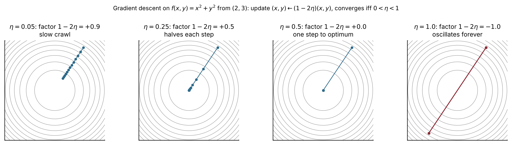
GD for OLS: $R_n(\beta)=\frac1n\|\X\beta-\y\|^2$ has $\nabla R_n=\frac2n\X\T(\X\beta-\y)$, so $\beta_{t+1}=\beta_t-\frac{2\eta_t}n\X\T(\X\beta_t-\y)$: the Week 1 answer, iteratively.
Gradient checking: compare your coded gradient with $\frac{f(\w+\delta\mathbf e_i)-f(\w)}{\delta}$ for small $\delta$. Numerical gradients are easy but slow; exact gradients are efficient but error-prone.
ML objectives decompose over examples, $f(\w)=\frac1n\sum_if_i(\w)$, so a gradient from a few examples is a cheap, unbiased estimate of the full gradient.
Plain SGD jumps around; mini-batches are much more stable. Large datasets are redundant, which is why a few examples give a good enough direction.
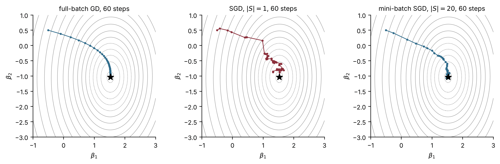
Perceptron: loss $L((\x,y),\w)=(-y\w\T\x)_+$ (zero when correct, $-y\w\T\x$ when wrong); its gradient on a mistake is $-y\x$, so SGD with step $\eta$ is exactly $\w\leftarrow\w+\eta y\x$. Adaline: SGD on $\frac1n\sum_i(\w\T\x_i-y_i)^2$.
An MLP is a feedforward network of layers: input, hidden, output. Connections go only forward and only between adjacent layers. Depth counts layers with tunable parameters, so a "3-layer MLP" is a "2-hidden-layer MLP". It is a sequence of (linear map, activation) pairs:
Historical motivation: ALVINN (1993) drove at 70 mph with one hidden layer mapping a $30\times32$ image to steering.
| Activation | $g(u)$ | Unit |
|---|---|---|
| identity | $u$ | identity unit |
| sigmoid | $\sigma(u)=1/(1+e^{-u})$ | sigmoid unit |
| tanh | $(e^u-e^{-u})/(e^u+e^{-u})$ | tanh unit |
| rectifier | $(u)_+=\max(0,u)$ | ReLU |
Objectives. Regression $f:\mathbb R^d\to\mathbb R$: quadratic loss (MLPRegressor). Classification $f:\mathbb R^d\to\mathbb R^K$: log-loss $-\ln\softmax(f(\x_i;\w))_{y_i}$ with $\softmax(s)=(e^{s_1},\dots,e^{s_K})/\sum_ye^{s_y}$ (MLPClassifier).
$\binom{h_1}{h_2}=\sigma\bigl(W_1\binom{x_1}{x_2}\bigr)$, $o=W_2\binom{h_1}{h_2}$ with $W_2=(1\ \ -1)$. The network computes
The stated $W_1=\begin{pmatrix}1&2\\0&1\end{pmatrix}$ gives $h_2=\sigma(x_2)$, but the slide's formula and value $0.6836$ use $\sigma(-x_2)$, i.e. a weight of $-1$. Treat the formula as authoritative.
Why backprop? With $L=(o-y)^2$, $\partial L/\partial w_{2,1}=2(o-y)h_1$ is easy, but derivatives for first-layer weights get messy fast. Computing gradients by hand is tedious.
Two passes: forward (compute every unit's output) and backward (propagate derivatives from the output back). Setting: sigmoid hidden units, one identity output, loss $L=\frac12(o-y)^2$ per example (gradients over a dataset are sums).
Derivation. Let $s_j=\sum_{i\in P(j)}w_{ij}o_i$ and $\delta_j=\partial L/\partial s_j$. Output: $\delta_k=\frac{\partial L}{\partial o_k}\frac{\partial o_k}{\partial s_k}=(o_k-y)\cdot1$. Hidden: $s_i$ affects $L$ only through its children, so $\delta_i=\sum_{j\in C(i)}\frac{\partial L}{\partial s_j}\frac{\partial s_j}{\partial o_i}\frac{\partial o_i}{\partial s_i}=\sum_j\delta_jw_{ij}\,o_i(1-o_i)$. Weights: $w_{ij}$ affects $L$ only via $s_j$, so $\partial L/\partial w_{ij}=\delta_jo_i$.
$\sigma'(s)=\sigma(s)(1-\sigma(s))=o(1-o)$: the only place the sigmoid enters the backward pass, using values already computed going forward.
| Unit | $o_i$ | $\delta_i$ | Connection | $g_{ij}=\delta_jo_i$ |
|---|---|---|---|---|
| 3 | $\sigma(3)=0.9526$ | $\delta_5w_{35}o_3(1-o_3)=-0.0595$ | (1,3), (2,3) | $-0.0595$ each |
| 4 | $\sigma(-1)=0.2689$ | $\delta_5w_{45}o_4(1-o_4)=0.2588$ | (1,4), (2,4) | $0.2588$ each |
| 5 | $0.6836$ | $o_5-y=-1.3164$ | (3,5) / (4,5) | $-1.2540$ / $-0.3540$ |
Check: $o_3(1-o_3)=0.0452$, $o_4(1-o_4)=0.1966$, $w_{35}=1$, $w_{45}=-1$.
The motivating slide uses $L=(o-y)^2$ (factor 2); the derivation uses $\frac12(o-y)^2$ (clean $\delta_k=o_k-y$). They differ by a constant factor, which just rescales the learning rate, but say which one you use.
Backprop extends to other losses, activations and multiple outputs, so MLPs can be trained for classification, density estimation and more.
Two-spirals demo: a 6-layer MLP's shallow units carve straight lines; deeper units represent pieces of the spirals.
| Approach | Idea | Drawback |
|---|---|---|
| Numerical | finite differences $\frac{f(\w+\delta\mathbf e_i)-f(\w)}\delta$ | approximate and slow (one evaluation per parameter) |
| Symbolic | apply differentiation rules to a symbolic expression | expression swell and inefficient code: $f_1=x$, $f_{k+1}=e^{x^2+f_k}$ blows up; $\partial_a(a^2b+ab^2)$ comes out as $2ab+a^20+1b^2+a0$ |
| Automatic | break the code into elementary operations on a computational graph and apply the chain rule | needs a framework (that is what PyTorch is) |
Autodiff is not symbolic differentiation: it passes values around, not symbols.
Carry $\dot w_i=\partial w_i/\partial x_1$ forward with each value:
$\dot w_1=1,\ \dot w_2=0,\ \dot w_3=e^{w_1}\dot w_1,$
$\dot w_4=\dot w_1w_2+w_1\dot w_2,\ \dot w_5=\dot w_3+\dot w_4$.
One pass = derivative w.r.t. one input.
Carry $\bar w_i=\partial f/\partial w_i$ backward:
$\bar w_5=1,\ \bar w_4=\bar w_3=\bar w_5,\ \bar w_2=\bar w_4w_1,$
$\bar w_1=\bar w_3e^{w_1}+\bar w_4w_2$ (two children, summed).
One pass = derivatives w.r.t. all inputs.
Backprop is a special case of reverse-mode autodiff. The $\delta$'s are the $\bar w$'s, and "sum over children $C(i)$" is the sum over paths.
TensorFlow (Google; Keras API; production at scale) and PyTorch (Meta; Lightning API; research, prototyping, NLP) dominate, in a large ecosystem (JAX, scikit-learn, Transformers, …). The key feature of all of them is automatic differentiation.
torch | tensors with GPU support |
torch.autograd | automatic differentiation |
torch.nn | layers and loss functions |
torch.optim | optimisers |
x = torch.ones(2, requires_grad=True)
y = torch.dot(x, x) # f(x) = ||x||^2
y.backward() # reverse-mode autodiff
print(x.grad) # tensor([2., 2.])
# OLS three ways: autograd only / torch.optim / torch.nn
beta = torch.zeros(X.shape[1], requires_grad=True)
optimizer = optim.SGD([beta], lr=0.5, momentum=0)
for i in range(200):
optimizer.zero_grad() # gradients ACCUMULATE otherwise
loss = torch.mean((X @ beta - Y)**2)
loss.backward()
optimizer.step()
net = nn.Sequential(nn.Linear(2, 10), nn.ReLU(), nn.Linear(10, 1))
optimizer = optim.SGD(net.parameters(), lr=0.001)
dataloader = DataLoader(DatasetWrapper(X, y), batch_size=10, shuffle=True)
for epoch in range(nepochs):
for X_batch, y_batch in dataloader: # mini-batch SGD
optimizer.zero_grad()
loss = mse(net(X_batch), y_batch)
loss.backward()
optimizer.step()zero_grad() is not optional: PyTorch accumulates into .grad, so forgetting it makes each step use the sum of all gradients so far. A Dataset needs __init__, __len__, __getitem__; the DataLoader is what makes it mini-batch SGD.
The in-lecture multiple-choice quizzes. Tick every statement you think is correct, then check — each option explains itself.
13 questions: 3 beginner, 5 intermediate, 3 advanced, 2 expert. Click a question to reveal the worked answer.
$\w_{t+1}=\w_t-\eta_t\nabla f(\w_t)$. First-order Taylor: $f(\w+d)\approx f(\w)+d\T\nabla f(\w)$. With $d=-\eta_t\nabla f(\w_t)$, $f(\w_{t+1})\approx f(\w_t)-\eta_t\|\nabla f(\w_t)\|^2$, strictly less than $f(\w_t)$ if the gradient is nonzero. The approximation error is $O(\eta_t^2)$, so for small enough $\eta_t$ the linear decrease wins; for large steps no guarantee holds.
optimizer.zero_grad() in every PyTorch training iteration?loss.backward() adds the new gradient into each parameter's .grad buffer rather than overwriting it. Without resetting, step $t$ uses $\sum_{s\le t}\nabla L_s$, an ever-growing and stale direction, so training goes wrong. (Accumulation is deliberate: it lets you sum gradients over several small batches before one step.)
Numerical differentiation (finite differences): approximate, and needs one extra function evaluation per parameter, so it is far too slow for millions of weights. Symbolic differentiation: expressions swell (repeated subexpressions, unsimplified $a^2\cdot0$ terms) and produce inefficient code. Automatic differentiation: applies the chain rule to the program's elementary operations, passing numerical values; reverse mode gets all partial derivatives in one backward pass.
Update $(x,y)\leftarrow(1-2\eta)(x,y)$. For $\eta=0.25$ the factor is $0.5$: $(1,1.5)$, $(0.5,0.75)$, $(0.25,0.375)$.
Converges iff $|1-2\eta|\lt1\iff0\lt\eta\lt1$. $\eta=1$: factor $-1$, iterates alternate $(2,3)\leftrightarrow(-2,-3)$ forever. $\eta=1.2$: factor $-1.4$, iterates alternate in sign and grow, $|(\cdot)|\propto1.4^t$: divergence. $\eta=0.5$ reaches $(0,0)$ in one step.
nn.Sequential(nn.Linear(2,10), nn.ReLU(), nn.Linear(10,1)).$o(0,1)=\sigma(2)-\sigma(-1)=0.8808-0.2689=0.6119$.
Parameters: Linear(2,10) has $2\times10$ weights $+10$ biases $=30$; Linear(10,1) has $10+1=11$; ReLU has none. Total $41$.
Values: $w_1=0$, $w_2=2$, $w_3=e^0=1$, $w_4=0$, $w_5=1$.
Forward (seed $\dot w_1=1,\dot w_2=0$): $\dot w_3=e^{0}\cdot1=1$, $\dot w_4=1\cdot2+0\cdot0=2$, $\dot w_5=3$. So $\partial f/\partial x_1=3$. Getting $\partial f/\partial x_2$ needs a second pass.
Reverse: $\bar w_5=1$; $\bar w_3=\bar w_4=1$; $\bar w_2=\bar w_4w_1=0$; $\bar w_1=\bar w_3e^{w_1}+\bar w_4w_2=1+2=3$. One pass gives $\nabla f=(3,0)$. Check: $\partial_1f=e^{x_1}+x_2=3$, $\partial_2f=x_1=0$.
One-sided: $\frac{3.01^2-9}{0.01}=\frac{0.0601}{0.01}=6.01$; exact derivative is 6, error $0.01=\delta$. Central: $\frac{3.01^2-2.99^2}{0.02}=\frac{0.12}{0.02}=6.00$, exact here.
Taylor: the one-sided error is $\frac\delta2f''(w)+O(\delta^2)$, i.e. $O(\delta)$; in the central difference the $f''$ terms cancel, leaving $O(\delta^2)$. (Too small a $\delta$ brings floating-point cancellation back, so use something like $10^{-4}$–$10^{-6}$ in double precision.)
$L(\w)=\max(0,-y\w\T\x)$. If the example is correctly classified ($y\w\T\x\gt0$), $L=0$ near $\w$ and the gradient is 0: no update. If misclassified ($y\w\T\x\lt0$), $L=-y\w\T\x$ with gradient $-y\x$, so the SGD step is $\w\leftarrow\w-\eta(-y\x)=\w+\eta y\x$: exactly the perceptron rule. At $y\w\T\x=0$ the loss has a kink; choosing the subgradient $-y\x$ there matches the "$\le0$ counts as a mistake" convention.
Define $s_j=\sum_{i\in P(j)}w_{ij}o_i$ and $\delta_j=\partial L/\partial s_j$, with $L=\frac12(o_k-y)^2$.
Output (identity): $o_k=s_k$, so $\delta_k=\frac{\partial L}{\partial o_k}=o_k-y$.
Hidden: $s_i$ influences $L$ only through $o_i=\sigma(s_i)$, and $o_i$ only through the children's sums $s_j$, $j\in C(i)$, each depending on $o_i$ via $w_{ij}o_i$. Multivariate chain rule: $\delta_i=\sum_{j\in C(i)}\frac{\partial L}{\partial s_j}\frac{\partial s_j}{\partial o_i}\frac{\partial o_i}{\partial s_i}=\sum_j\delta_jw_{ij}\sigma'(s_i)$, and $\sigma'(s_i)=o_i(1-o_i)$.
Weights: $w_{ij}$ appears only in $s_j$, with $\partial s_j/\partial w_{ij}=o_i$, so $g_{ij}=\delta_jo_i$. Processing units in reverse topological order makes every $\delta_j$ available when needed: one backward pass costs about as much as one forward pass.
Forward: $o_3=\sigma(3)=0.9526$, $o_4=\sigma(-1)=0.2689$, $o_5=0.6836$.
$\delta_5=o_5-y=0.6836$. $\delta_3=\delta_5\,w_{35}\,o_3(1-o_3)=0.6836\cdot1\cdot0.0452=0.0309$. $\delta_4=\delta_5\,w_{45}\,o_4(1-o_4)=0.6836\cdot(-1)\cdot0.1966=-0.1344$.
$g_{35}=\delta_5o_3=0.6512$, $g_{45}=\delta_5o_4=0.1839$, $g_{13}=\delta_3o_1=0.0309$, $g_{24}=\delta_4o_2=-0.1344$.
Sanity check: the output is too high ($0.68\gt0$), so GD should lower $o$: it decreases $w_{35}$ (positive gradient) and increases $w_{24}$, which raises $h_2$, which, through $w_{45}=-1$, lowers $o$. Note how small $\delta_3$ is: $h_1$ is nearly saturated ($o_3(1-o_3)=0.045$), a first glimpse of vanishing gradients.
A fourth, practical point: fewer units can mean fewer parameters and better sample efficiency, though depth brings optimisation difficulties (vanishing gradients, Weeks 6–7, and ResNets, Week 9).
$\nabla f=A\w$, so $\w_{t+1}=(I-\eta A)\w_t$. In the eigenbasis of $A$ (eigenvalues $\lambda_i$) each coordinate is multiplied by $1-\eta\lambda_i$ every step. Convergence iff $|1-\eta\lambda_i|\lt1$ for all $i$, i.e. $0\lt\eta\lt2/\lambda_{\max}$. For $x^2+y^2$, $A=2I$, giving $0\lt\eta\lt1$ as found.
For $0.1x^2+y^2$: $\lambda=0.2$ and $2$, so $\eta\lt1$. Even at the best safe step the $x$-factor is $1-0.2\eta\ge0.8$, while near $\eta=1$ the $y$-factor $1-2\eta$ is close to $-1$ (zig-zag). The convergence rate is governed by the condition number $\lambda_{\max}/\lambda_{\min}=10$: the step must suit the steep direction, which makes progress in the flat direction slow. Week 7's fixes (momentum, input normalisation, adaptive per-dimension rates) all attack this ill-conditioning.
Forward vs reverse. For $f:\mathbb R^n\to\mathbb R^m$, one forward-mode pass gives one column of the Jacobian (derivatives w.r.t. one input); one reverse pass gives one row (derivatives of one output w.r.t. all inputs). A training loss has $m=1$ output and $n$ = millions of parameters, so reverse mode needs one backward pass (cost a small constant times a forward pass) where forward mode would need $n$. The price is memory: reverse mode stores intermediate values from the forward pass.
Expression swell. $f'_{k+1}=f_{k+1}\cdot(2x+f'_k)$, and $f_{k+1}$ itself contains $f_k$, which contains $f_{k-1}$… Expanding symbolically duplicates these subexpressions, so the expression grows rapidly with $k$ (by $f_{100}$ it is unmanageable) and evaluating it recomputes the same values. Autodiff evaluates the program once, storing each $f_j$ as a number, then runs $f'_j=f_j(2x+f'_{j-1})$: $O(k)$ work. It differentiates the computation, reusing shared values, rather than a formula.
CNNs power image classification (AlexNet 2012), sentence classification (Kim 2014), speech recognition on spectrograms, Atari from raw pixels (DQN 2015) and pneumonia detection from X-rays (CheXNet 2017). The common pattern: array data with local structure.
Local receptive fields, weight sharing, and spatial/temporal pooling, giving some shift, scale and distortion invariance. They are implemented by convolutional and pooling layers. A CNN is still a feedforward net: an MLP with sparse, tied weights.
net = nn.Sequential(nn.Conv2d(1, 6, 5), nn.ReLU(), nn.MaxPool2d(2),
nn.Conv2d(6, 16, 5), nn.ReLU(), nn.MaxPool2d(2),
nn.Flatten(),
nn.Linear(256, 120), nn.ReLU(),
nn.Linear(120, 84), nn.ReLU(),
nn.Linear(84, 10))
ce = CrossEntropyLoss() # training loop identical to the Week 4 MLP loop$28\times28\xrightarrow{5\times5}24\times24\xrightarrow{\text{pool }2}12\times12\xrightarrow{5\times5}8\times8\xrightarrow{\text{pool }2}4\times4$, with 16 channels: $16\times4\times4=256$. Tracing shapes like this is the single most examinable CNN skill.
Slide a filter (kernel) across the input and record a similarity score, the inner product of the filter with the patch it covers, at each position. Hand-designed examples: a colour blob filter finds green spots; the Sobel filters detect edges:
In a CNN the filter weights are learned.
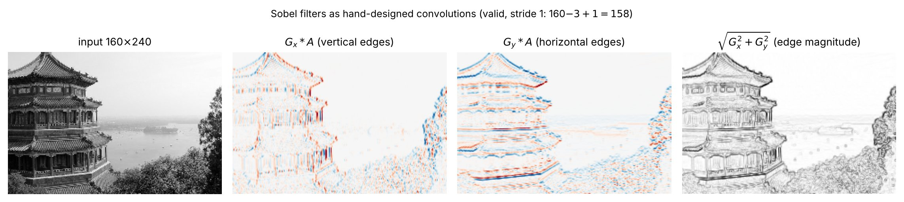
Top-left: $2(3)+2(9)+1(7)+2(7)=45$. The output is $3\times3$ because a $2\times2$ window has 3 valid positions per axis.
Top-left $2(3)+2(9)+1(7)+2(3)=37$. The last row and column are never scanned: $\lfloor(5-2)/2\rfloor+1=2$.
As a neural net: in the $4\times4$ example the $3\times3$ outputs are neurons, each connected to only 4 of the 16 inputs (local receptive field), all using the same 4 weights (weight sharing).
Mathematical convolution is an inner product with the reversed, shifted signal; cross-correlation is the plain sliding inner product.
CNN "convolution" is cross-correlation: no kernel flip. It makes no difference to a learned filter (the network just learns the flipped kernel), but it matters if asked to compute $f*A$ by the mathematical definition. (The slides also write "$f*g$" where they mean $f*A$.)
With $D=1$ the general formula is $\lfloor(N+2P-F)/S\rfloor+1$, which reduces to the first when $P=0$. The floor matters: $N=5,F=2,S=2$ gives 2, so the last column is skipped.
| Layer | Output | Arithmetic |
|---|---|---|
| Conv, 8 filters $11\times11$ | $8@118\times118$ | $128-11+1$ |
| MaxPool $2\times2$, $S=2$ | $8@59\times59$ | $\lfloor116/2\rfloor+1$ |
| Conv, 16 filters $6\times6$ | $16@54\times54$ | $59-6+1$ |
| MaxPool | $16@27\times27$ | $\lfloor52/2\rfloor+1$ |
| Conv, 32 filters $6\times6$ | $32@22\times22$ | $27-6+1$ |
| MaxPool | $32@11\times11$ | $\lfloor20/2\rfloor+1$ |
| Flatten → FC | $1\times80\to1\times10$ |
A conv layer has several filters; each produces its own activation (feature) map, and the maps are stacked as output channels. A filter spans all input channels: with $C_{\text{in}}$ inputs and $F\times F$ extent it is a $C_{\text{in}}\times F\times F$ array.
Independent of the spatial size of the input: weight sharing paying for itself. A fully connected layer between the same tensors needs (inputs)×(outputs) weights.
Pooling (sub-/downsampling) slides a window like convolution, but with default stride = window size and a fixed aggregation instead of learned weights:
Max pooling works better in practice; overlapping pooling (stride $\lt$ window) is sometimes used. Pooling has no learnable parameters and gives local translation invariance.
| Layer | Type | Shape |
|---|---|---|
| INPUT | $32\times32$ | |
| C1 | conv, 6 filters $5\times5$ | $6@28\times28$ |
| S2 | sub-sampling | $6@14\times14$ |
| C3 | conv, 16 filters $5\times5$ | $16@10\times10$ |
| S4 | sub-sampling | $16@5\times5$ |
| C5 | conv | 120 |
| F6 | fully connected | 84 |
| OUTPUT | Euclidean RBF units | 10 |
The bullet list calls the second conv layer "C2"; the architecture diagram (correctly) labels it C3.
ImageNet: 1000 classes, 1.3 million high-resolution training images. The ILSVRC headline metric is top-5 error.
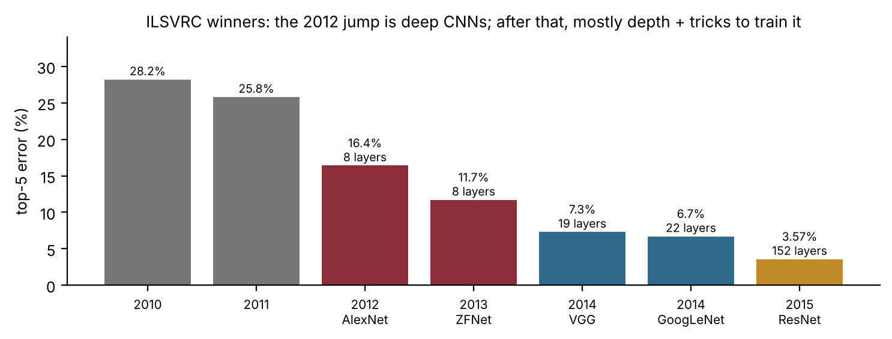
The second form is $-\ln\softmax(o)_y$ with the log and exp cancelled: the numerically sane way to compute it.
(i) $224\times224$ with an $11\times11$, $S=4$ filter gives $\lfloor213/4\rfloor+1=54$, not the paper's 55; it works for 227, or 224 with $P=2$. Don't treat AlexNet as an arithmetic exercise. (ii) The paper has 96 first-layer filters; torchvision's one-GPU AlexNet (and the visualisation deck) has 64.
Several small conv layers have the same receptive field as one big one, but are deeper (more nonlinearity) and use fewer parameters: three $3\times3$ layers see $7\times7$ with $27C^2$ weights versus $49C^2$ for one $7\times7$ layer on $C$ channels.
$C_1$ filters of $3\times3$ applied directly to $C\times W\times H$ cost $9C_1CWH$. First reducing to $C_0$ channels with $1\times1$ filters costs $C_0CWH+9C_1C_0WH$. With $C_0=\frac13C\lt C_1$:
Under half the cost, same output shape. The naive module (parallel $1\times1$, $3\times3$, $5\times5$ convs and $3\times3$ max pool, concatenated) is very expensive; the real one puts $1\times1$ reductions before the $3\times3$/$5\times5$ branches and after the pooling branch.
| Technique | What it shows |
|---|---|
| Filters as images | AlexNet's first layer ($64\times3\times11\times11$): oriented edges, colour blobs, frequency patterns. Deeper filters are small and abstract, so not very interesting. |
| Nearest neighbours in feature space | Images closest in last-hidden-layer features share the class but differ in pixels: features are semantic. |
| 2D embeddings | Embed many images' feature vectors in the plane; similar images cluster. |
| Activation maps | Some channels are interpretable, e.g. a conv5 channel firing on faces. |
| Maximally activating images | Gradient ascent on the input: $\max_x\,a(x)-R(x)$ with weights fixed. |
| Saliency maps | $S_{ij}=\max_{k\in\{R,G,B\}}|\partial y_c/\partial x_{kij}|$, score before softmax. |
| Grad-CAM | Class-discriminative heatmap from the last conv layer. |
Maximally activating images. Without a regulariser you get high-frequency noise that the net classifies confidently: deep nets are easily fooled (Nguyen et al. 2015). $R(x)=\lambda\|x\|^2$ gives recognisable motifs; better still, combine priors: $L_2$ (no extreme values), Gaussian blur (no sharp transitions), clip small pixels and clip small-gradient pixels to 0 (suppress unimportant regions). Layer by layer this reveals the hierarchy: edges → textures and parts → whole objects.
For class score $y^c$ (before softmax) and last-conv-layer maps $A^1,\dots,A^m\in\mathbb R^{h\times w}$:
Saliency differentiates w.r.t. pixels (fine but noisy). Grad-CAM differentiates w.r.t. the last conv activations (coarse but clean and class-specific); its ReLU keeps only regions with positive influence on class $c$. Maximally activating images do gradient ascent to synthesise an input rather than explain one.
The in-lecture multiple-choice quizzes. Tick every statement you think is correct, then check — each option explains itself.
13 questions: 3 beginner, 5 intermediate, 3 advanced, 2 expert. Click a question to reveal the worked answer.
Both slide a window over each channel separately and output one number per window: the max or the mean. Neither has learnable parameters (LeNet's sum+bias sub-sampling is the exception). Default stride equals the window size, so windows do not overlap; overlapping pooling uses a smaller stride. Max pooling is found to work better in practice: it keeps the strongest detection of a feature in the region rather than diluting it.
No: it is cross-correlation, $\sum_if(i)g(n+i)$, the plain sliding inner product. Mathematical convolution $\sum_if(i)g(n-i)$ flips the kernel. For learning it makes no difference, since a CNN can learn the flipped filter. It matters when you are asked to compute $f*A$ by the mathematical definition, or when comparing with signal-processing results (e.g. commutativity holds for convolution but not cross-correlation).
CNN (cross-correlation): each entry is $1a_{11}+0a_{12}-1a_{21}+2a_{22}$ over a window, e.g. top-left $1-3+2=0$:
Mathematical convolution uses the flipped kernel $\begin{pmatrix}2&-1\\0&1\end{pmatrix}$, e.g. top-left $2(1)-1(0)+0(3)+1(1)=3$:
Pooling (stride 2): max $\begin{pmatrix}3&2\\2&3\end{pmatrix}$, average $\begin{pmatrix}1.25&1.25\\1&1.25\end{pmatrix}$.
Use $\lfloor(N+2P-D(F-1)-1)/S\rfloor+1$.
nn.Linear(256,120).(a) $64(3\cdot9+1)=64\cdot28=1792$. (b) $65536$ inputs and outputs: $65536^2+65536\approx4.3\times10^9$ parameters. (c) $256\cdot120+120=30840$.
The contrast between (a)–style conv layers and (b) is the whole point of weight sharing: the conv parameter count is independent of $32\times32$, while the dense layer scales with the square of the number of positions.
nn.Linear(256, 120) have to become? Trace the shapes.$32\xrightarrow{5\times5}28\xrightarrow{\text{pool}}14\xrightarrow{5\times5}10\xrightarrow{\text{pool}}5$. With 16 channels the flattened size is $16\cdot5\cdot5=400$, so it must be nn.Linear(400, 120). This is exactly original LeNet-5's S4 shape ($16@5\times5$). Getting this number wrong is the most common runtime error ("mat1 and mat2 shapes cannot be multiplied").
Direct: $9C_1CWH=9\cdot128\cdot192\cdot784\approx1.73\times10^8$.
Bottleneck: $C_0CWH+9C_1C_0WH=(64\cdot192+9\cdot128\cdot64)\cdot784=(12288+73728)\cdot784\approx6.74\times10^7$.
Ratio $\frac{86016}{221184}\approx0.39\le\frac49$, as the slide's bound predicts (here $C_0=C/3$ and $C_0\lt C_1$). The output shape is unchanged; only the intermediate channel count shrinks.
Each $3\times3$ layer extends the receptive field by 1 pixel on each side. One layer sees $3\times3$; if $n-1$ layers see $(2n-1)^2$, one more layer combines a $3\times3$ grid of those overlapping windows, adding one pixel per side: $(2n+1)^2$. So three layers see $7\times7$.
Parameters (ignoring biases): three layers $3\cdot(3^2C^2)=27C^2$; one $7\times7$ layer $49C^2$, about 81% more. The stack also has three nonlinearities instead of one, so it can represent more complex functions of the same region. This is VGG's design principle (and the cost trade-off of depth: more sequential layers).
$\frac{\partial L}{\partial o_j}=-\I(j=y)+\frac{e^{o_j}}{\sum_ie^{o_i}}=\softmax(o)_j-\I(j=y)$. So the gradient is $\softmax(o)-\mathbf e_y$: predicted probabilities minus the one-hot target, the same "prediction − target" pattern as Weeks 3–4.
Numerically, computing $\softmax$ then $\ln$ can overflow ($e^{1000}$) or take $\ln0$. The form $-o_y+\ln\sum_ie^{o_i}$ is evaluated with the log-sum-exp trick, $\ln\sum_ie^{o_i}=M+\ln\sum_ie^{o_i-M}$ with $M=\max_io_i$, which is stable. That is why PyTorch's CrossEntropyLoss takes raw scores (logits), not probabilities.
The ReLU keeps regions with positive evidence for $c$; negative regions are evidence for other classes. A saliency map instead takes $\max_k|\partial y_c/\partial x_{kij}|$ at the pixels: full resolution but noisy, and the absolute value loses the sign. Grad-CAM is coarse ($14\times14$ or $7\times7$) but class-discriminative and clean.
A fully connected layer would have 12 free entries; the conv layer forces 6 to be zero (locality) and ties the rest to two values along the diagonals (weight sharing), a banded Toeplitz matrix. So conv layers are a constrained special case of fully connected layers, and backprop through them is ordinary backprop with shared weights (gradients of tied copies are summed, just like BPTT in Week 6).
Equivariance: shifting the input shifts the output by the same amount (away from the borders), because every row applies the same filter. Invariance (output unchanged by the shift) is not provided by convolution; it comes approximately from pooling (a small shift within a pooling window often leaves the max unchanged) and from global pooling at the end of modern CNNs.
Gradient ascent on $a(x)$ over all of $\mathbb R^{\text{pixels}}$ is unconstrained: the network responds to many tiny, coordinated pixel changes in directions humans cannot perceive, so the optimiser finds high-frequency patterns that drive the activation up without resembling anything. This is the same phenomenon as adversarial examples: the network is not smooth on natural inputs, and in high dimensions many small aligned changes add up (for a locally linear score, the change is $\epsilon\|\w\|_1$, growing with dimension).
The priors restrict the search to "natural-looking" images: $L_2$ prevents a few extreme pixel values; Gaussian blur removes high-frequency, sharp transitions; clipping small-valued pixels suppresses faint background structure (non-primary objects); clipping small-gradient pixels keeps only pixels that actually contribute. Together they turn the optimisation from "fool the network" into "show what the unit has learned".
Feedforward nets (MLPs, CNNs) have cycle-free computation graphs; recurrent nets contain loops. Hopfield nets (Week 3) are one kind; this week is about recurrent sequence models.
| Shape | Picture | Example | |
|---|---|---|---|
| (a) | one to many | one input, several outputs | image captioning |
| (b) | many to one | several inputs, one output at the end | video classification |
| (c) | many to many | read all inputs, then emit outputs | machine translation |
| (d) | many to many | one output per input, in step | video frame classification |
(c) and (d) are different architectures. In (c) the sequences can have different lengths and outputs start after the input is consumed (encoder–decoder); in (d) outputs are aligned one-to-one with inputs.
Applications in the decks: phoneme recognition (Graves et al. 2013), handwriting synthesis (Graves 2013), translation (Britz et al. 2017), captioning (Vinyals et al. 2016), program evaluation (Zaremba & Sutskever 2014: predictions for print((16*3071)) are close but usually wrong, e.g. 49336 for 49136), and the LSTM-written short film Sunspring.
with the same parameters $W$ at every step. A finite sequence unfolds into a feedforward net with weight-equality constraints.
Why share parameters? Arbitrary-length sequences with a fixed number of parameters; a time-invariant processing module (as convolution is space-invariant); less overfitting. Example (time series, predict $x_{t+1}$): $h_t=\tanh(w_1h_{t-1}+w_2x_t+b)$, $y_t=w_3h_t$.
Memory. $h_t$ can carry information from far in the past, unlike memoryless models such as HMMs and linear dynamical systems. That makes RNNs expressive and also hard to train, which is why they were neglected for years.
Unit weights, identity activations: $h_t=x_t+h_{t-1}$, $y_t=h_t$. Input $1,2,3,4$ gives $1,3,6,10$. Changing the two input weights gives an exponential moving average, $h_t=\alpha h_{t-1}+(1-\alpha)x_t$.
class StandardRNN(nn.Module):
def __init__(self, input_size=1, hidden_size=32):
super().__init__()
self.rnn = nn.RNN(input_size=input_size, hidden_size=hidden_size,
num_layers=1, nonlinearity="tanh", batch_first=True)
self.output_layer = nn.Linear(hidden_size, 1)
def forward(self, x, hidden=None):
hidden_states, hidden = self.rnn(x, hidden)
return self.output_layer(hidden_states), hidden
loss = criterion(net(x_batch)[0], y_batch) # [0] = predictionsnn.RNN returns a pair, hence [0]. batch_first=True means (batch, time, features); the default is (time, batch, features).
Bidirectional RNNs run one recurrence forwards and one backwards and concatenate: $y_t=g([\overrightarrow h_t,\overleftarrow h_t])$. They use right context (e.g. handwriting recognition) but need the whole sequence first, so they cannot do streaming prediction or generation.
$h_2=w^{(2)}w^{(1)}h_0+w^{(2)}x_1+x_2$. Then $\partial h_2/\partial w^{(2)}=wh_0+x_1$ and $\partial h_2/\partial w^{(1)}=wh_0$, so $\partial h_2/\partial w=2wh_0+x_1$. Check directly: $h_2=w^2h_0+wx_1+x_2$. ✓
Substitute $w^{(1)}=w^{(2)}=w$ only after differentiating; doing it first and then differentiating "the copies" loses a term.
For vanilla RNNs over long sequences the gradient can grow (explode) or shrink (vanish) exponentially in the number of steps; deep feedforward nets have the same problem (hence GoogLeNet's auxiliary classifiers). The slides analyse the scalar model
Everything hinges on the product of per-step factors $w_1(1-o_j^2)$.
| Vanishing | $w_1$ very large: the $o_j$ saturate near $\pm1$, $1-o_j^2\approx0$, the factors are tiny and the product collapses. |
|---|---|
| Exploding | $|w_1|\gt1$ moderately large with small $o_j$: $|w_1(1-o_j^2)|\gt1$, so the product grows exponentially with depth. |
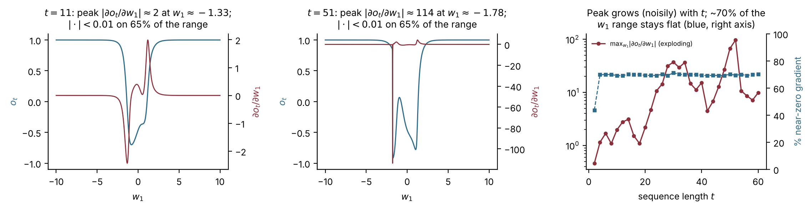
For chunks $t=(c-1)K+1,\dots$: h = h.detach() (stop gradients at the chunk boundary), run the RNN over $x_{t:t+K-1}$ from that state, compute the chunk loss, take one optimisation step.
Gradients never flow more than $K$ steps back, so the RNN cannot fully exploit long history. The forward pass is not truncated: the state still carries information forward; only credit assignment is cut.
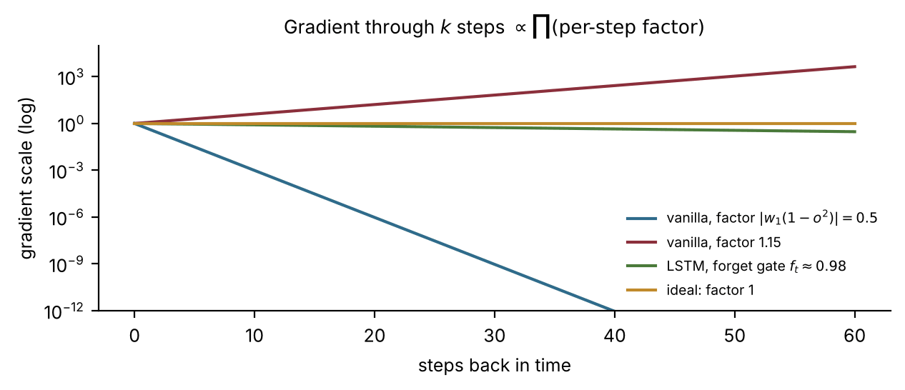
Hochreiter & Schmidhuber (1997), designed to avoid exploding/vanishing gradients.
Long-term memory = the weights (persistent). Short-term memory = the activations (volatile). An LSTM's short-term memory lasts a long time: read it as long × short-term memory.
Why it works. The gradient of $c_t$ contains $f_t\odot$ (gradient of $c_{t-1}$), so gradients flow along the cell state uninterrupted as long as $f_t$ is large. Compare the vanilla factor $w_1(1-o_j^2)$, a saturating derivative we do not control: $f_t$ is a learned quantity the network can hold near 1 when it needs to remember.
LSTMs fix vanishing gradients but can still explode. Keep clipping.
Cho et al. (2014): a simplified LSTM with 3 nonlinearities instead of 4. Changes: cell and hidden state merged; no output gate; forget/input roles redistributed into an update gate $z_t$ and a reset gate $r_t$.
$z_t$ plays the forget gate's role (how much old state is kept); $r_t$ decides what part of the old state the candidate sees, and $1-z_t$ how much of the candidate is written. Retention and writing are coupled through $z_t$ and $1-z_t$, whereas LSTM's $f_t$ and $i_t$ are independent.
The slide's $h_t=z_t\odot h_{t-1}+(1-z_t)\odot\tilde h_t$ matches Cho et al. and nn.GRU. Many texts swap the roles: $h_t=(1-z_t)\odot h_{t-1}+z_t\odot\tilde h_t$. Same model, relabelled gate. The slide also writes the candidate's bias as $b_r$; it is a separate bias ($b_c$).
self.rnn = nn.RNN(input_size, hidden_size, num_layers=1, nonlinearity="tanh", batch_first=True)
self.rnn = nn.LSTM(input_size, hidden_size, num_layers=1, batch_first=True)
self.rnn = nn.GRU(input_size, hidden_size, num_layers=1, batch_first=True)Greff et al. (2016) compared eight LSTM variants on speech, handwriting and music: none was significantly better than the standard LSTM. The initial state $h_0$ (and $c_0$) is either fixed (e.g. zeros) or learned like any other parameter.
Predict the next character; the target at $t$ is the input at $t+1$ (input W,e,l,c,o,m, targets e,l,c,o,m,e). With vocabulary size $v$: one-hot input $x_t\in\mathbb R^v$, softmax output $o_t\in\mathbb R^v$, one-hot target $y_t$, loss $-y_t\T\ln o_t$ (e.g. $o_t=(.1,.2,.7)$, target the third character: loss $-\ln0.7$).
| Training | $x_t$ = the actual $t$-th character: teacher forcing, which alleviates the difficulty of early prediction errors |
|---|---|
| Prediction | $x_t$ = the model's own output from step $t-1$, fed back |
This sits on the supervised/unsupervised boundary: no separate labels, but supervised technique. Karpathy's char-RNN on War and Peace: at 100 iterations, character soup with the right spacing; 500, English-looking words; 1200, correct quotation marks and dialogue; 2000, grammatical sentences with named characters, locally coherent, globally meaningless. The same recipe learns Obama-style speeches and Meal-Master recipe structure.
Generation stops at an end-of-sentence token. Train by $\max_\theta\frac1N\sum_i\ln p_\theta(y_i\mid x_i)$. Finding the most likely translation is computationally hard, so decode greedily (or with beam search).
Greedy decoding is an approximation: locally best words need not form the globally most likely sentence. The Britz et al. figure also shows attention (Week 9), the fix for squeezing a whole sentence into one vector $c$; this week's model is the plain encoder–decoder.
One-to-many. The first input is a CNN feature vector of the image; later inputs are word embeddings of the same dimension; each output is a distribution over the next word. Train by maximising $p_\theta(S_{1:T}\mid I)=\prod_tp_\theta(S_t\mid I,S_{1:t-1})$ with $S_0=\langle\text{SOS}\rangle$; predict by feeding back the most likely word.
Keep the top few partial captions at each step; extend each, prune back to the best few; at the end output the most probable remaining caption. A middle ground between greedy decoding and exhaustive search.
The in-lecture multiple-choice quizzes. Tick every statement you think is correct, then check — each option explains itself.
13 questions: 3 beginner, 5 intermediate, 3 advanced, 2 expert. Click a question to reveal the worked answer.
(a) One to many: image captioning. (b) Many to one: video classification. (c) Many to many, read-then-write: machine translation. (d) Many to many, aligned: video frame classification.
(c) and (d) differ: in (c) input and output lengths can differ and outputs start after the whole input is read (encoder–decoder); in (d) there is one output per input at the same time step.
Teacher forcing: during training, feed the true previous token as the next input instead of the model's own prediction, so early mistakes do not derail the rest of the sequence and all steps get a clean training signal. At prediction time the model's own outputs are fed back.
Greedy decoding takes the single most likely token each step. Beam search keeps the $B$ best partial sequences, extends each, and prunes back to $B$, returning the most probable complete sequence: it searches more of the space and usually finds higher-probability outputs.
$h_1=0.5$, $h_2=0.25+1=1.25$, $h_3=0.625+1.5=2.125$, $h_4=1.0625+2=3.0625$. The outputs lag behind the inputs and smooth them: an exponential moving average with $\alpha=0.5$. Weights: $w_1=\alpha=0.5$, $w_2=1-\alpha=0.5$, $w_3=1$. The sum RNN is the same architecture with $w_1=w_2=w_3=1$.
Copies $w^{(1)},w^{(2)},w^{(3)}$: $h_3=w^{(3)}h_2+x_3$, $h_2=w^{(2)}h_1+x_2$, $h_1=w^{(1)}h_0+x_1$.
Sum: $3w^2h_0+2wx_1+x_2$. Directly, $h_3=w^3h_0+w^2x_1+wx_2+x_3$, whose derivative is $3w^2h_0+2wx_1+x_2$. ✓ Note the $w^2$ terms: with $|w|\gt1$ older inputs get exponentially amplified gradients, with $|w|\lt1$ they fade.
$c_t=0.9\cdot1+0.5\cdot0.8=1.3$; $h_t=0.6\tanh(1.3)=0.6\cdot0.862\approx0.517$.
$f_t=0,i_t=1$: $c_t=\tilde c_t=0.8$, the old memory is erased and replaced by the candidate. Conversely $f_t=1,i_t=0$ copies the cell unchanged, which is the "remember" mode whose gradient $\partial c_t/\partial c_{t-1}=f_t=1$ neither vanishes nor explodes.
nn.RNN, nn.LSTM and nn.GRU with input size 10 and hidden size 20 (one layer).One gate-sized block: $20\times10$ input weights + $20\times20$ recurrent weights + biases. PyTorch keeps two bias vectors per block ($b_{ih}$ and $b_{hh}$), so a block has $200+400+40=640$ parameters.
RNN: 1 block = 640. LSTM: 4 blocks ($f,i,\tilde c,o$) = 2560. GRU: 3 blocks ($r,z,\tilde h$) = 1920. With the lecture's single bias per gate: 620, 2480, 1860. The 3:4 ratio is the source of the "GRU is about 25% cheaper" quiz statement.
$\|(3,4)\|=5\gt1$, so $g\leftarrow(3,4)/5=(0.6,0.8)$: same direction, norm 1. $\|(0.03,0.04)\|=0.05\le1$: unchanged.
Clipping only ever shrinks large gradients, so it prevents a single exploding gradient from throwing the weights far away, but does nothing for vanishing gradients. For those you need architecture changes (LSTM/GRU, residual connections) or better initialisation.
$w_1$ appears in $h_t$ both explicitly and through $h_{t-1}$. Product rule: $\frac{\partial h_t}{\partial w_1}=\tanh(h_{t-1})+w_1\tanh'(h_{t-1})\frac{\partial h_{t-1}}{\partial w_1}=o_{t-1}+w_1(1-o_{t-1}^2)g_{t-1}$.
Unrolling from $g_0=0$: $g_t=\sum_{i=0}^{t-1}o_i\prod_{j=i+1}^{t-1}w_1(1-o_j^2)$. The contribution of step $i$ is weighted by a product of $t-1-i$ factors.
So vanishing is caused by saturation of tanh, exploding by the exponential dependence on the number of steps.
$c_t=f_t\odot c_{t-1}+i_t\odot\tilde c_t$. Along the direct path, $\partial c_t/\partial c_{t-1}=\operatorname{diag}(f_t)$ (plus terms through the gates' dependence on $h_{t-1}$). Over $k$ steps the direct-path gradient is $\prod f_{t-j}$ elementwise. Unlike the vanilla factor $w_1(1-o^2)$, which is pinned by the weights and tanh saturation, $f_t$ is an input-dependent learned gate: when information must be kept the network sets $f_t\approx1$ and the gradient passes nearly unchanged. The update is additive, not a repeated squashing.
The other paths (through $h_{t-1}$ into the gates and $\tilde c_t$) still involve products of weight matrices, which can grow without bound, so exploding gradients remain possible. Clipping is still used with LSTMs.
| LSTM | GRU | |
|---|---|---|
| State | cell $c_t$ (internal) + hidden $h_t$ (exposed) | only $h_t$ |
| Gates | forget $f_t$, input $i_t$, output $o_t$, candidate $\tilde c_t$ | update $z_t$, reset $r_t$, candidate $\tilde h_t$ |
| Retain old | $f_t$ | $z_t$ |
| Write new | $i_t$ (independent of $f_t$) | $1-z_t$ (coupled to $z_t$) |
| Expose | $o_t\odot\tanh c_t$ (partial) | $h_t$ directly |
| Cost | 4 gate blocks | 3 gate blocks (~25% less) |
The coupling means a GRU cannot simultaneously keep everything and write a lot: $h_t$ is a convex combination of old and new. An LSTM can keep $f_t=1$ and still add $i_t\tilde c_t$. Empirically neither dominates; Greff et al. found standard LSTM variants roughly equivalent.
Vocabulary $\{A,B\}$. Step 1: $p(A)=0.6$, $p(B)=0.4$. Step 2: $p(A\mid A)=p(B\mid A)=0.5$; $p(A\mid B)=0.9$, $p(B\mid B)=0.1$.
Sequence probabilities: $AA=AB=0.30$, $BA=0.36$, $BB=0.04$. Greedy picks $A$ at step 1 (0.6 > 0.4) and ends with probability 0.30. The best sequence is $BA$ (0.36), which starts with the locally worse token.
Beam width 2 keeps both $A$ (0.6) and $B$ (0.4), extends to $\{AA,AB,BA,BB\}$, keeps the top two ($BA$ 0.36, then $AA$ or $AB$ 0.30), and returns $BA$. Beam search is still approximate for long sequences, but it hedges against one locally attractive choice.
A bidirectional RNN's state at $t$ depends on $x_{t+1},\dots,x_T$. For an encoder the whole source sentence is available before decoding starts, so using right context is legitimate and helpful. For a generator, the future inputs are the very tokens being predicted: at generation time they do not exist yet.
Trained with teacher forcing, the backward state $\overleftarrow h_t$ has seen $x_{t+1}$, which is the target $y_t$. The network can learn to copy it, reaching near-zero training loss without learning language. At test time that information is absent and the model collapses. The Transformer decoder (Week 9) solves the same problem with a causal mask so position $t$ cannot attend to later positions.
Weeks 3–6 built architectures; Week 7 is about actually training them. Everything here fixes one of two failure modes: gradients that vanish or explode, and error surfaces that gradient descent navigates badly.
$\w$ is the optimisation variable, $f$ the objective, $h_i$ the constraints; the feasible set satisfies all constraints. Deep learning is almost always unconstrained. For a network $f(\x;\w)$ the standard objectives are $\sum_i(f(\x_i;\w)-y_i)^2$ (regression) and $\sum_i-\y_i\T\ln\softmax(f(\x_i;\w))$ (multiclass).
In numerical optimisation the objective is what we want, so we try very hard to optimise it. In ML the training objective is only a proxy for the unknown expected risk, so we try hard enough. That is why stopping early is respectable here.
"Easy": linear problems, then convex problems (convex objective and feasible set) and smooth functions. "Hard": nonconvex and nonsmooth, which is where deep nets live.
Convex: every local minimum is global. Smooth: a quadratic upper bound everywhere, which can guide minimisation.
Nonconvex: local minima need not be global; the practical trick is multiple restarts from different initial values, keeping the best. Nonsmooth: the standard example is $(u)_+$, i.e. ReLU. Gradient methods generalise to subgradients: $g$ is a subgradient at $\w$ iff $f(\w')\ge f(\w)+g\T(\w'-\w)$ for all $\w'$; for $(u)_+$ the subdifferential is $\{1\}$, $[0,1]$, $\{0\}$ for $u\gt0$, $u=0$, $u\lt0$.
At the kink the subgradient is a set. PyTorch picks 0 for ReLU at 0; theory only needs some element of $[0,1]$.
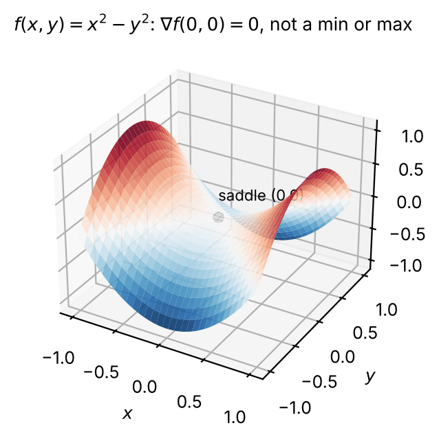
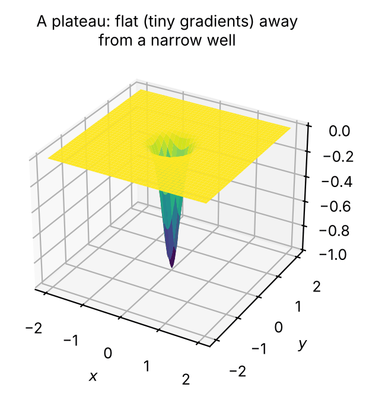
Saddle points occur in nonconvex functions. Plateaux occur in convex and nonconvex functions and are very common with sigmoid activations (saturated tails). Fix: start from reasonable initial values (below).
| Axis | Options |
|---|---|
| Gradient accuracy | exact (full pass over the data, impractical at scale) vs stochastic (great when data is redundant) |
| Derivative order | 0th (function values only, needs very many) / 1st (gradients, the workhorse) / 2nd (Hessians, expensive) |
An exponentially weighted average of past gradients: consistent directions build up speed. (Rolling-ball view: a ball with friction rolling on the loss surface gives exactly this update.)
Provably optimal first-order method for convex functions; usually beats standard momentum in practice.
The only difference is where the gradient is evaluated: at $\w_s$ (momentum) or at $v_s$ (Nesterov). If both of your updates use the same gradient argument, one of them is wrong.
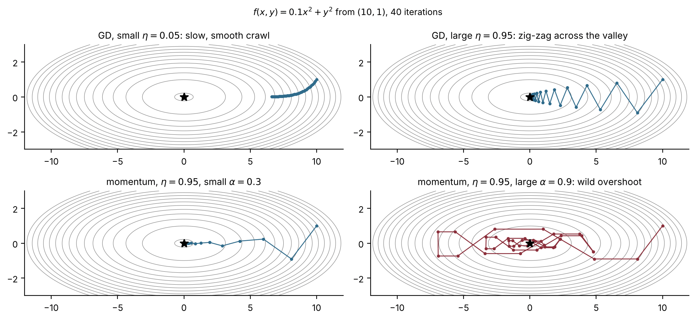
A mini-batch gradient $g=\frac1{|S|}\sum_{(\x,y)\in S}\nabla_\w L((\x,y),\w)$ depends on both the data and the weights, and so do activations. Two levers: weight initialisation and input transformation.
Symmetry is bad: two hidden units with identical incoming and outgoing weights get identical gradients and stay identical forever. Initialising everything to a constant (e.g. 0) wastes the layer; random weights break symmetry.
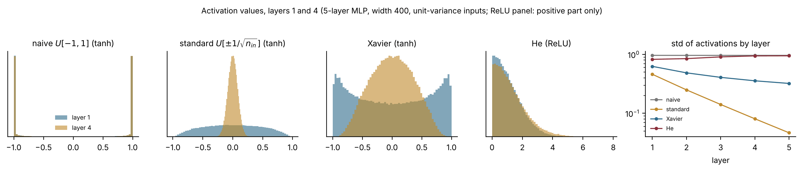
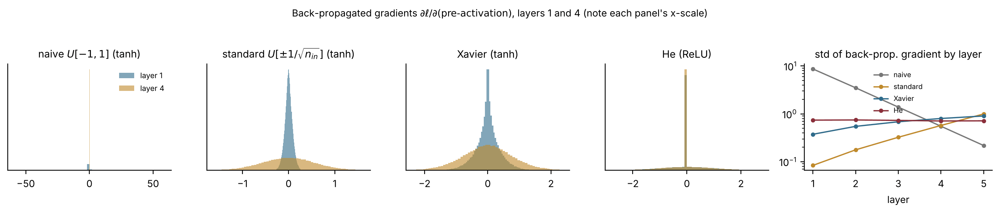
$W\sim U\Bigl(\pm\sqrt{\tfrac{6}{\nin+\nout}}\Bigr)$, i.e. $\Var(W)=\frac{2}{\nin+\nout}$.
Much less drastic change in activations and gradients across layers.
$W\sim U\Bigl(\pm\sqrt{\tfrac{6}{\nin}}\Bigr)$, i.e. $\Var(W)=\frac2\nin$.
Xavier assumes the linear region of the activation; ReLU zeroes about half the units, and the factor 2 compensates.
For independent zero-mean $W,X$: $\Var(WX)=\Var(W)\Var(X)$ (in general $\Var(X)\Var(W)+(\E X)^2\Var(W)+(\E W)^2\Var(X)$), and $\Var(\sum_{i=1}^nW_iX_i)=n\Var(W)\Var(X)$. Assume zero-mean inputs and weights and a linear (or linear-region) activation.
Both hold only if $\nin=\nout$, so compromise: $\Var(W)=\frac{2}{\nin+\nout}$. Since $\Var(U[-b,b])=b^2/3$, $b=\sqrt{6/(\nin+\nout)}$; for a Gaussian, $\sigma=\sqrt{2/(\nin+\nout)}$.
Every 6 is $3\times2$, the 3 from $\Var(U[-b,b])=b^2/3$. The standard rule $b=1/\sqrt\nin$ gives $\Var(W)=\frac{1}{3\nin}$: three times too small, which is exactly why its activations decay with depth. Always go through $b^2/3$.
Diversity: different initial weights let neurons become different features. Stability: activation variance and gradient variance should not change much across layers.
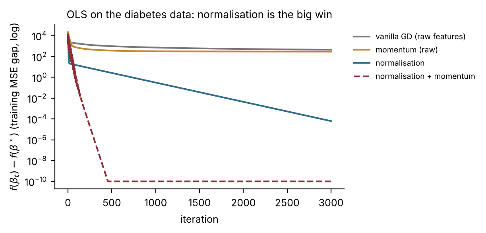
Zero mean, unit variance, uncorrelated dimensions.
Write the network as $F_2(F_1(\x,\w_1),\w_2)$ with hidden inputs $v_i=F_1(\x_i,\w_1)$. Normalised $\x$ stays normalised, but the distribution of $v$ changes whenever $\w_1$ is updated.
The distribution of each layer's inputs changes during training, and those inputs are not normalised. Normalised input data $\ne$ normalised inputs to hidden neurons.
Weight-dependent normalisation: feed hidden neuron $\hat x=(x-\mu)/\sigma$ with $\mu,\sigma$ depending on the data and the current weights. The naive version (full-dataset statistics each epoch, in the gradient graph) has two problems: loss of representation power and huge computational cost.
| Problem | Batch normalisation's fix (Ioffe & Szegedy 2015) |
|---|---|
| Cost | Statistics from the mini-batch, so gradients are cheap. |
| Representation power | Feed a learned affine map $y=\gamma\hat x+\beta$; $\gamma=\sigma,\beta=\mu$ recovers the identity. "Normalise, then denormalise." |
$x_i$ reaches the loss through $\hat x_i$ directly and through $\mu_\mathcal B$ and $\sigma^2_\mathcal B$. The same "sum over all paths" rule as BPTT's sum over weight copies.
net = nn.Sequential(nn.Linear(100, 50), nn.ReLU(),
nn.Linear(50, 10), nn.BatchNorm1d(10), nn.Sigmoid()) # recommended
net.train() # batch statistics
net.eval() # frozen running statistics (the slide writes net.test(): not a real method)Forgetting net.eval(): the model keeps using batch statistics at test time, so predictions depend on how the test set happens to be batched.
BN: statistics per neuron over examples. LN: statistics over all neurons of a layer for one example: $\mu_l=\frac1m\sum_ix_{l,i}$, $\sigma_l=\sqrt{\frac1m\sum_i(x_{li}-\mu_l)^2}$, $y_{li}=\gamma_{li}\hat x_{li}+\beta_{li}$.
Magnitude times direction: $x=\gamma\frac{w\T}{\|w\|}u+b$. A special case of weight-dependent normalisation with $\mu=b$, $\sigma=\|w\|_2$.
Flat surface: want a large rate. Steep surface: need a small one. Near a minimiser: small, to avoid oscillation. Different layers also see very different gradient sizes, so per-dimension rates help. Annealing (e.g. drop 0.1 → 0.01 when validation error plateaus) handles oscillation around a minimiser.
Newton: $\w'=\w-H^{-1}g$ minimises the second-order Taylor model, but is expensive. Its diagonal approximation $w_i\leftarrow w_i-\frac{1}{h_i+\epsilon}g_i$ is the template for every method below: a per-dimension denominator built from cheap curvature-like information.
The weights in $m^{(t)}=(1-\rho_1)\sum_{i=0}^{t-1}\rho_1^ig^{(t-i)}$ sum to $1-\rho_1^t\ne1$. At $t=1$ with $\rho_1=0.9$, $m^{(1)}=0.1g^{(1)}$, ten times too small. Dividing by $1-\rho_1^t$ fixes this, and the correction fades as $\rho_1^t\to0$.
$\epsilon$ is inside the square root for AdaGrad/RMSProp/AdaDelta but outside for Adam. AdaDelta's numerator uses $s$ (squared updates), its denominator $v$ (squared gradients).
| Method | Update |
|---|---|
| GD | $w-\eta g$ |
| Momentum | $w-\eta m$ |
| AdaGrad | $w-\frac{\eta}{\sqrt{u+\epsilon}}g$ |
| RMSProp | $w-\frac{\eta}{\sqrt{v+\epsilon}}g$ |
| AdaDelta | $w-\frac{\sqrt{s+\epsilon}}{\sqrt{v+\epsilon}}g$ |
| Adam | $w-\frac{\eta}{\sqrt{\hat v}+\epsilon}\hat m$ |
PyTorch: SGD, Adagrad, Adadelta, RMSprop, ASGD, Rprop, Adam, Adamax, AdamW, NAdam, RAdam, LBFGS.
The in-lecture multiple-choice quizzes. Tick every statement you think is correct, then check — each option explains itself.
15 questions: 4 beginner, 5 intermediate, 4 advanced, 2 expert. Click a question to reveal the worked answer.
For a convex function every local minimum is a global minimum, so any method that finds a local minimum is done. Nonconvex functions (deep nets) can have local minima that are not global, as well as saddle points and plateaux. Practical trick: run the optimiser from several random initialisations and keep the solution with the smallest objective.
A saddle point has zero gradient but is neither a min nor a max (curving up in some directions and down in others, like $x^2-y^2$ at the origin). A plateau is a large region where the function is nearly flat, so gradients are tiny and progress stalls; numerically such points look like critical points.
Sigmoids saturate: for large $|u|$, $\sigma'(u)\approx0$. Weights that push many units into saturation put the network on a flat region of the loss, which is why sensible (small, scaled) initialisation matters.
Hidden units in a layer with identical incoming and outgoing weights compute the same activation, receive the same gradient, and so receive the same update, forever. The layer behaves like a single unit no matter how wide it is. Random initialisation breaks the symmetry (diversity), and the scale of the randomness controls stability.
Internal covariate shift: the distribution of a hidden layer's inputs changes during training because the earlier layers' weights change, so hidden inputs are not normalised even when the data is.
BN's two fixes: (1) compute $\mu,\sigma^2$ on the mini-batch rather than the whole dataset, making gradients cheap; (2) follow normalisation with a learned affine map $y=\gamma\hat x+\beta$, so the layer can still represent the identity and no representation power is lost.
$f'(w)=2w$. First step: $w_2=1-0.1\cdot2=0.8$.
Momentum: $w_3=w_2-\eta f'(w_2)+\alpha(w_2-w_1)=0.8-0.16+0.9(-0.2)=0.46$.
Nesterov: look-ahead $v_2=w_2+\alpha(w_2-w_1)=0.8-0.18=0.62$; then $w_3=v_2-\eta f'(v_2)=0.62-0.124=0.496$.
Nesterov's gradient is evaluated at 0.62 (smaller), so it brakes slightly earlier: a built-in correction that reduces overshoot.
Xavier: $\Var(W)=\frac{2}{500}=0.004$. Uniform $b=\sqrt{6/500}\approx0.110$ (check: $b^2/3=0.004$). Gaussian $\sigma=\sqrt{0.004}\approx0.063$.
He: $\Var(W)=\frac2{400}=0.005$, $b=\sqrt{6/400}\approx0.122$.
Standard init would use $b=1/\sqrt{400}=0.05$, i.e. $\Var(W)=0.05^2/3\approx0.00083$: well below both, which is why its activations shrink with depth.
$\mu_\mathcal B=3$, $\sigma^2_\mathcal B=\frac{4+1+0+9}4=3.5$, $\sigma_\mathcal B\approx1.871$. $\hat x=(-1.069,-0.535,0,1.604)$; $y=2\hat x+1=(-1.138,-0.069,1,4.207)$. Check: $\hat x$ has mean 0 and (population) variance 1.
Test time: $y=\frac{\gamma}{\sigma}x+\beta-\frac{\gamma\mu}{\sigma}=\frac{2}{1.871}(3-3)+1=1$. The same input gives the same output regardless of what else is in the batch.
$m^{(1)}=0.1\cdot0.5=0.05$, $v^{(1)}=0.001\cdot0.25=0.00025$.
Corrected: $\hat m=0.05/0.1=0.5$, $\hat v=0.00025/0.001=0.25$, step $=\eta\cdot0.5/\sqrt{0.25}=0.001$. Adam's first step is $\eta\,\sgn(g)$, whatever the gradient's size.
Uncorrected: $0.001\cdot0.05/\sqrt{0.00025}=0.001\cdot3.16=0.00316$, about $(1-\rho_1)/\sqrt{1-\rho_2}=\sqrt{10}$ times too large. Without correction, the early steps are mis-scaled by the mismatched decay rates of $m$ and $v$.
AdaGrad: $u^{(t)}=t$, step $\eta/\sqrt t$: it decays to zero even though the gradient never shrank, so progress eventually stops.
RMSProp: $v^{(t)}=(1-\rho)\sum_{i\lt t}\rho^i=1-\rho^t\to1$, step $\to\eta$: it settles at a constant scale, and keeps making progress.
This is exactly the deck's criticism of AdaGrad (accumulation) and RMSProp's fix (moving average).
Assumptions: inputs i.i.d. with mean 0; weights sampled independently from a mean-0 distribution, independent of inputs; activations in their linear region (or identity).
Forward: $Y=\sum_{i=1}^{n_{in}}W_iX_i$, so $\Var(Y)=n_{in}\Var(W)\Var(X)$ (zero means kill the cross terms in the product-variance formula). To keep $\Var(Y)=\Var(X)$: $\Var(W)=1/n_{in}$.
Backward: the gradient w.r.t. a unit's input sums over its $n_{out}$ outgoing connections, $H=\sum_jW_jG_j$, so $\Var(H)=n_{out}\Var(W)\Var(G)$. To keep it stable: $\Var(W)=1/n_{out}$.
Both hold only when $n_{in}=n_{out}$; the harmonic-style compromise is $\Var(W)=\frac{2}{n_{in}+n_{out}}$. With $\Var(U[-b,b])=\frac{(2b)^2}{12}=\frac{b^2}3$: $b=\sqrt{6/(n_{in}+n_{out})}$. For ReLU, half the units are zeroed, halving the forward variance, so He uses $2/n_{in}$.
Adding $b$ to every example in the batch shifts $\mu_\mathcal B$ by $b$ and leaves $\sigma^2_\mathcal B$ unchanged, so $\hat x=(x+b-(\mu+b))/\sqrt{\sigma^2+\epsilon}$ is unchanged. Hence the bias is useless before BN, and $\beta$ takes over its role.
Test time, with fixed $\mu,\sigma^2$: $y=\gamma\frac{x-\mu}{\sqrt{\sigma^2+\epsilon}}+\beta=\frac{\gamma}{\sqrt{\sigma^2+\epsilon}}x+\Bigl(\beta-\frac{\gamma\mu}{\sqrt{\sigma^2+\epsilon}}\Bigr)$, an affine map that can even be folded into the preceding linear layer.
Placement: $Wu$ (a sum of many terms) tends to be symmetric and roughly Gaussian, so normalising it is meaningful and keeps the following nonlinearity in its useful range. The output of a ReLU is non-negative and sparse, a poor candidate for mean/variance normalisation.
Shifting every $x_i$ by the same $c$ shifts $\mu_\mathcal B$ by $c$ and leaves $\sigma^2_\mathcal B$ and hence every $\hat x_i$ and $y_i$ unchanged. So $\ell(x_1+c,\dots,x_m+c)=\ell(x_1,\dots,x_m)$ for all $c$; differentiating at $c=0$: $\sum_i\partial\ell/\partial x_i=0$.
(With the formulas: the $\mu$-path term $\frac1m\partial\ell/\partial\mu_\mathcal B$ exactly cancels the mean of the other two terms. Similarly, with $\epsilon=0$, scale invariance gives $\sum_i(x_i-\mu_\mathcal B)\partial\ell/\partial x_i=0$.)
Interpretation: BN removes the mean and scale of its inputs from the loss, so gradients never push the whole batch's pre-activations up or down together. That is the mechanism by which BN prevents drift of hidden-unit statistics (internal covariate shift). It also illustrates why forgetting the indirect paths (via $\mu,\sigma$) gives wrong gradients.
Unrolled, $\w_{s+1}-\w_s=-\eta\sum_{k=0}^{s-1}\alpha^kg\to-\frac{\eta}{1-\alpha}g$. With $\alpha=0.9$ the effective step is $10\eta$.
Acceleration: along a flat but consistent direction (the long axis of $0.1x^2+y^2$), gradients agree step after step, so momentum multiplies the progress by up to $1/(1-\alpha)$. Damping: in the steep direction gradients alternate in sign, so they partly cancel in the average. Overshoot: the accumulated velocity does not stop when the gradient changes sign; with large $\eta$ and $\alpha$ near 1 the effective step $\eta/(1-\alpha)$ exceeds the stable range ($2/\lambda_{\max}$, Q4.12) and the iterates oscillate wildly, as in the bottom-right trajectory panel.
BN normalises each neuron over the examples in the batch; LN normalises over the neurons of a layer within one example.
eval() bug.BN remains strong for CNNs with large batches, where its batch noise also gives implicit regularisation, which LN does not provide.
The flat loss is the plateau picture: saturation means near-zero gradients everywhere, so the optimiser has nothing to follow.
Weeks 3–6 built architectures and Week 7 learned to optimise them. Week 8 asks what optimisation cannot answer: the training error is small, but does the model work on new data? The two decks are two sides of one coin: stop high-capacity nets fitting noise, and notice that even nets that generalise well on natural data can be broken by tiny deliberate perturbations.
We usually minimise the training error $\min_\w\frac1n\sum_iL((\x_i,y_i),\w)$. Whether that works is problem-specific: we need the right capacity, enough to fit the regularities but not the noise.
| Definition (relative to another model) | Cause / remedy | |
|---|---|---|
| Underfits | poorer training and poorer test performance | too little capacity: use a bigger model |
| Overfits | better training but poorer test performance | fits irregularities; deep nets often overfit |
Both definitions are comparative: a model overfits relative to another model.
| Approach | Idea |
|---|---|
| More data | Almost always helps; a main driver of deep learning's success. |
| Model selection | Train models of different capacity, keep the right one (Week 2). |
| Model averaging | Combine several models: bagging (bootstrap samples), Bayesian (posterior-weighted ensemble). |
| Regularisation | Fit the training data while avoiding fitting irregularities. |
Explicit: change what is minimised (an $\ell_1$/$\ell_2$ penalty). Implicit: change how it is minimised (early stopping, dropout, and Week 7's batch norm). Common methods: data augmentation, $\ell_1/\ell_2$, early stopping, dropout.
Add perturbed or synthetic examples: LeNet's distorted digits (0.95% → 0.8%), AlexNet's crops and flips; torchvision.transforms offers RandomRotation, RandomAffine, ColorJitter, GaussianBlur, RandAugment and more. The new examples must be realistic.
"Realistic" is task-dependent: a flip is fine for cats but turns "b" into "d"; rotating a 6 by 180° gives a 9. An augmentation that changes the true label injects label noise.
$\ell_2$ = weight decay (by $2\eta\lambda$). It keeps weights small so no single feature dominates; with two similar inputs it splits the weight roughly evenly ($a^2+b^2$ with $a+b$ fixed is smallest at $a=b$).
PyTorch's weight_decay=wd adds $\text{wd}\cdot\w$ to the gradient, i.e. the penalty $\frac{\text{wd}}2\|\w\|^2$. To match $\lambda\|\w\|^2$ use weight_decay=2*lam. For Adam, weight_decay is not decoupled weight decay: that is AdamW.
Stability: a learned model should not change drastically when the training data is perturbed. $\ell_2$ increases stability (recall $(X\T X+\lambda I)^{-1}X\T y$ is well-conditioned) and gives smaller variance, larger bias.
Minimise $L(\w)+\lambda\|\w\|_1$ (LASSO for linear regression). $\ell_1$ encourages sparsity: many weights become exactly 0, which helps interpretation.
$\ell_2$ rescales (never exactly 0 unless $a=0$); $\ell_1$ soft-thresholds (every $|a|\le\lambda$ becomes 0). The penalty's gradient near 0 is $2\lambda w\to0$ for $\ell_2$ (the pull fades) but $\pm\lambda$ for $\ell_1$ (constant pull all the way; subgradient $[-\lambda,\lambda]$ at 0).
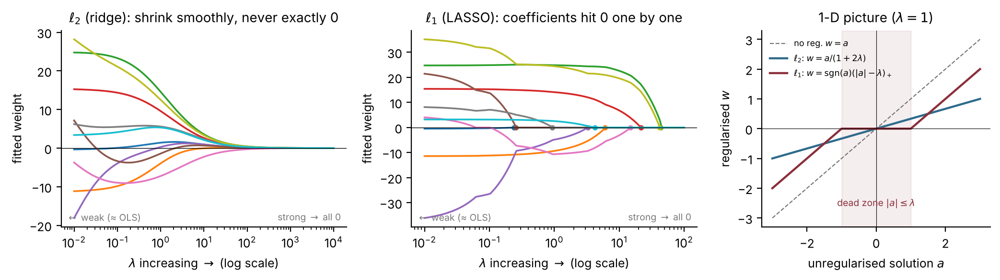
Left edge ($\lambda\to0$) = unregularised; right edge = all zero. Ridge curves can cross zero (correlated features trade weight) but settle only in the limit; LASSO curves sit flat on the axis over whole intervals.
With $P(\w\mid D)=P(\w)P(D\mid\w)/P(D)$, $P(\w)\propto e^{-r(\w)}$ and $P(D\mid\w)\propto e^{-L(D,\w)}$:
| Regulariser | Prior $P(\w)\propto e^{-r(\w)}$ | Shape |
|---|---|---|
| $\lambda\|\w\|_2^2$ | Gaussian, mean 0, variance $\frac{1}{2\lambda}$ | smooth at 0 |
| $\lambda\|\w\|_1$ | Laplace, mean 0, scale $\frac1\lambda$ | sharp peak at 0 ⇒ sparsity |
Larger $\lambda$ = more concentrated prior. Likewise squared loss ↔ Gaussian likelihood and cross-entropy ↔ categorical likelihood.
Test error can first fall and then rise as training continues, so stop when validation error starts getting worse.
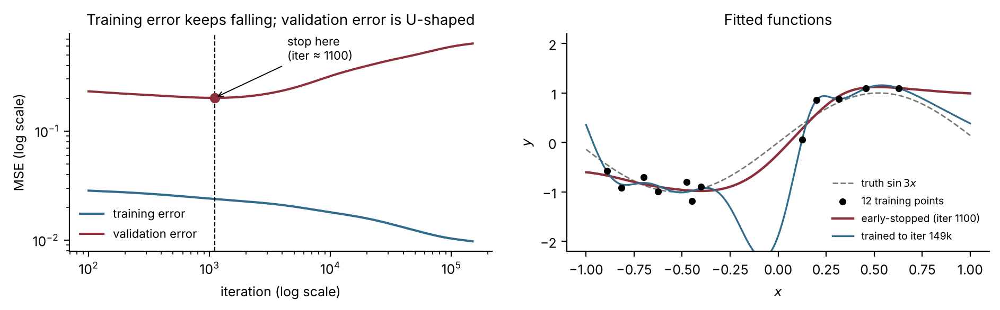
It stops the model fitting the training data too well. For sigmoid nets: from small initial weights, units sit in their linear region and the net is roughly linear; weights grow during training and the net becomes more nonlinear; stopping early prevents a highly nonlinear fit. In effect it limits how far $\w$ travels from a small initialisation: an implicit cousin of $\ell_2$.
Best with methods that reduce training error at every step (vanilla GD). With momentum the validation error oscillates with a decreasing trend, so one uptick is not a signal to stop. In practice use a patience window and restore the best checkpoint.
best, bad, patience = float("inf"), 0, 10
for epoch in range(max_epochs):
train_one_epoch(net, trainloader, opt)
val = evaluate(net, valloader)
if val < best:
best, bad = val, 0
torch.save(net.state_dict(), "best.pt") # keep the best model, not the last
else:
bad += 1
if bad >= patience: break
net.load_state_dict(torch.load("best.pt"))Defines an ensemble from one architecture, trains its members simultaneously and averages them for prediction. Each of $h$ chosen neurons is omitted with probability $p$, giving $m=2^h$ architectures, weighted by their probabilities and sharing the same parameters.
Sample $v_i\sim\mathrm B(1-p)$ (keep with probability $1-p$) and replace activations $a_i$ by $a_iv_i$. A fresh mask per example per step makes each SGD step a stochastic gradient of this objective.
Why it helps: co-adaptation. Units that know which other units are present can co-adapt to fit irregularities. Having to work with random sets of co-workers forces each unit to be useful on its own.
Test time. Averaging $2^h$ models is too expensive. For a unit with output $y$: kept with probability $1-p$, dropped otherwise, so $\E[\text{output}]=(1-p)y$.
Train with masks; at test time use the full network and multiply each chosen unit's activation by $(1-p)$, matching its expected value.
Train with $a_iv_i/(1-p)$, so $\E=a_i$; at test time use the full network with no scaling.
net = nn.Sequential(nn.Linear(784, 512), nn.ReLU(), nn.Dropout(p=0.5), # p = DROP probability
nn.Linear(512, 10))
net.train() # masks sampled, kept activations scaled by 1/(1-p)
net.eval() # dropout off: full network, no scalingDropConnect masks weights instead of activations.
nn.Dropout(p) it is the drop probability; the original paper uses $p$ for retention.net.eval() leaves dropout on at test time.An input $\x+\delta$ where $\delta$ is imperceptible (or nearly) to humans, yet the prediction changes, often to a wrong class with high confidence.
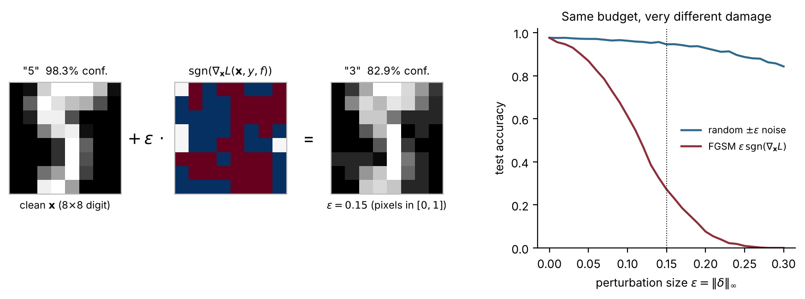
For a score $\w\T\x$ and $\|\delta\|_\infty\le\epsilon$, choosing $\delta=\epsilon\,\sgn(\w)$ changes the score by $\w\T\delta=\epsilon\|\w\|_1\approx\epsilon m\overline{|w|}$, growing linearly in the dimension $m$, while each pixel moves by at most $\epsilon$. Random signs mostly cancel (about $\epsilon\sqrt m$ scale): the gap between the two curves in the figure.
| Question | Options |
|---|---|
| Specific outcome? | Non-targeted (any wrong label) vs targeted (a specific label) |
| Model known? | White box (full knowledge); black box with probing (can query); black box without probing |
The exact problem is hard (the class constraint); the relaxation wants a valid (box), small (penalty) perturbation that makes $y$ likely, solved with box-constrained L-BFGS. In the LeNet grid, $c=10^{-6}$ succeeds with visible noise, $c=0.1$ and $1$ succeed almost invisibly, $c=10$ fails ($2\to2$): $c$ trades size against success.
"Loss + penalty" again, but the variable is the input with weights fixed (like Week 5's maximally activating images). Drawbacks: slow, and small perturbations can sometimes be defeated by reducing image quality.
Separable per coordinate, so each $\delta_i=\epsilon\,\sgn(g_i)$. One gradient evaluation. Clip to $[0,1]$ afterwards.
def fgsm(net, x, y, eps):
x = x.clone().requires_grad_(True)
loss = F.cross_entropy(net(x), y)
loss.backward() # gradient w.r.t. the INPUT, weights fixed
return (x + eps * x.grad.sign()).clamp(0, 1).detach()LeNet/MNIST grid: $\epsilon=0.05$ fools none of six digits; 0.1 fools 3; 0.2 fools 4; 0.3 fools all six, with visible noise.
| Min perturbation | FGSM | |
|---|---|---|
| Goal | targeted: reach $y$ | non-targeted: leave true $y$ |
| Loss | minimise $L(\x+\delta,\text{target})$ | maximise $L(\x+\delta,\text{true})$ |
| Size control | penalty $c\|\delta\|_2^2$ | constraint $\|\delta\|_\infty\le\epsilon$ |
| Cost | iterative L-BFGS | one gradient |
Black-box attacks rely on transferability: attack a model you can differentiate. Without probing, use an ensemble to increase transfer; with probing, train a substitute model on the target's answers and attack that.
| Defence | Idea |
|---|---|
| Regularisation | weight decay, dropout |
| Noise | add noise in training and/or testing |
| Generative pre-training | learn representations on unlabelled data generatively, then fine-tune |
| Ensembles | train on adversarial examples built for multiple models |
Attacking is easy (many methods, transferability). Defending is difficult: no single method has been found to be very effective.
The perturbed example's loss cannot differ much from the original's, so FGSM is less likely to flip the label. Alternatively, add adversarial examples to the training set, iteratively for intermediate models.
$r$ plays the role of $\epsilon$, and the perturbation is recomputed from the current weights each step. Robustness to FGSM is not robustness to every attack.
The in-lecture multiple-choice quizzes. Tick every statement you think is correct, then check — each option explains itself.
13 questions: 3 beginner, 5 intermediate, 3 advanced, 2 expert. Click a question to reveal the worked answer.
A model underfits if it has poorer training and poorer test performance than another model (limited capacity). It overfits if it has better training performance but poorer test performance than another model (it fits irregularities). They are comparative because "good" training or test error has no absolute meaning; we can only say one model of the family generalises better than another, e.g. along the capacity axis of a U-shaped test curve.
Explicit: modify the objective. $\ell_2$, $\ell_1$.
Implicit: modify the learning algorithm. Early stopping (when to stop), dropout (random masks during training), batch normalisation (batch-dependent noise, Week 7).
Data augmentation modifies the training data; it is usually listed with regularisers. You can also see it as explicit (it changes the empirical risk being minimised, by adding perturbed examples).
Outcome: non-targeted (any wrong label) vs targeted (a specific label). Knowledge: white box (full model access), black box with probing (queries allowed), black box without probing.
Minimum perturbation: white box, targeted. FGSM: white box, non-targeted. Black-box attacks typically use transferability: attack a substitute or an ensemble, then apply the examples to the target.
weight_decay value reproduces this in PyTorch SGD?Shrink factor $1-2\eta\lambda=0.9$: $\w\leftarrow0.9(1,-2)-0.1(0.5,0.5)=(0.9,-1.8)-(0.05,0.05)=(0.85,-1.85)$.
PyTorch adds $\text{wd}\cdot\w$ to the gradient, i.e. the step is $\w-\eta(\nabla L+\text{wd}\,\w)$, so $\text{wd}=2\lambda=1.0$.
$\ell_2$: $w^\star=a/(1+2\lambda)=a/3$: $1$, $0.167$, $-0.667$. Every weight shrinks by the same factor; none is 0.
$\ell_1$: $w^\star=\sgn(a)(|a|-1)_+$: $2$, $0$, $-1$. Large weights shift towards 0 by $\lambda$; the small one is set exactly to 0. That is sparsity.
$2^3=8$ architectures. Full network: $(1-p)^3=0.125$ for $p=0.5$ (all equal); $0.8^3=0.512$ for $p=0.2$.
Standard: training passes 2.0 (or 0 if dropped); test passes $(1-p)\cdot2.0=1.6$. Inverted: training passes $2.0/0.8=2.5$ (or 0); test passes 2.0. Either way the training-time expectation equals the test-time value: $0.8\cdot2.0=1.6$ and $0.8\cdot2.5=2.0$.
Score $\w\T\x=1-0.5+0.25=0.75\gt0$: correct. Logistic loss $\ln(1+e^{-y\w\T\x})$ has $\nabla_\x L=-y\,\sigma(-y\w\T\x)\,\w$, so $\sgn(\nabla_\x L)=-\sgn(\w)=(-1,+1,-1)$ and $\delta=\epsilon(-1,1,-1)$.
New score $0.75+\w\T\delta=0.75-\epsilon\|\w\|_1=0.75-3.5\epsilon$. It flips when $\epsilon\gt0.75/3.5\approx0.214$. Each coordinate moves by only 0.214, but all three changes are aligned against $\w$.
Gaussian: $P(w)\propto e^{-w^2/(2\sigma^2)}$, so $r(w)=\frac{1}{2\sigma^2}w^2$ and $\lambda=\frac1{2\cdot0.25}=2$ (consistent with variance $\frac1{2\lambda}=0.25$).
Laplace with scale $b$: $P(w)\propto e^{-|w|/b}$, so $\lambda=1/b=10$. A smaller prior scale means a stronger belief that weights are near 0, hence a larger penalty.
$\ell_2$: derivative $(w-a)+2\lambda w=0\Rightarrow w=a/(1+2\lambda)$.
$\ell_1$: $J(w)=\frac12(w-a)^2+\lambda|w|$ is convex; $w$ is optimal iff $0\in\partial J(w)=w-a+\lambda\,\partial|w|$.
Together: $w^\star=\sgn(a)(|a|-\lambda)_+$. The whole interval $|a|\le\lambda$ maps to exactly 0 because the subgradient of $|w|$ at 0 is an interval, which can absorb the data's pull. The $\ell_2$ penalty's gradient vanishes at 0, so it can never hold a weight there.
$\delta\T g=\sum_i\delta_ig_i$ and the constraint is $|\delta_i|\le\epsilon$ for each $i$ separately, so maximise each term independently: $\delta_ig_i$ is largest at $\delta_i=\epsilon\,\sgn(g_i)$, giving $\epsilon|g_i|$. Total $\epsilon\|g\|_1$ (Hölder: $\ell_1$ is the dual norm of $\ell_\infty$).
The $\ell_\infty$ ball models "no pixel changes by more than $\epsilon$", a natural notion of imperceptibility. The result moves every pixel by the full budget in the harmful direction. Under an $\ell_2$ constraint the answer would instead be $\delta=\epsilon g/\|g\|_2$ (gradient direction, value $\epsilon\|g\|_2$), which concentrates change in a few pixels.
Linear: with mask $v\sim\mathrm B(1-p)$, $\E[hv/(1-p)]=h$, so anything linear in $h$ (e.g. the next pre-activation) has the right expectation and the test-time network computes the ensemble mean exactly.
Nonlinear: training outputs are $\sigma(w\cdot2h)=\sigma(8)=0.9997$ (kept, scaled by 2) or $\sigma(0)=0.5$ (dropped), each with probability 0.5: ensemble mean $0.7498$. The test network outputs $\sigma(4)=0.982$. Since $\sigma$ is not linear, $\E[\sigma(\cdot)]\ne\sigma(\E[\cdot])$ (Jensen). So the deterministic test network is a cheap approximation to the ensemble average, effective in practice but not an identity.
Gradient-sign perturbation: $\w\T\delta=\epsilon\sum_i|w_i|=\epsilon mc$, growing linearly in $m$.
Random $\delta_i=\pm\epsilon$ (independent fair signs): $\w\T\delta$ has mean 0 and standard deviation $\epsilon\sqrt{\sum_iw_i^2}=\epsilon c\sqrt m$, growing like $\sqrt m$. The ratio is $\sqrt m$: for a $28\times28$ image, $\sqrt{784}=28$. A budget that moves the score by 28 standard deviations of random noise is enough to cross the boundary while random noise of the same size is not.
This is the "excessive linearity" explanation: networks that behave locally linearly (ReLU, unsaturated sigmoids) inherit this amplification, and it explains the two curves in Figure 8.3. It also explains transferability: different models trained on similar data learn similar $\w$ directions.
GD: $w_{t+1}=w_t-\eta a(w_t-w^*)$, so $w_t-w^*=(1-\eta a)^t(0-w^*)$ and $w_t=\bigl(1-(1-\eta a)^t\bigr)w^*$. The weight is a shrunken version of the unregularised solution; the shrinkage factor rises from 0 to 1 as $t$ grows.
Ridge: $\min\frac a2(w-w^*)^2+\lambda w^2$ gives $w=\frac{a}{a+2\lambda}w^*$, also a shrinkage factor between 0 and 1. Matching the factors, stopping at iteration $t$ behaves like ridge with some $\lambda(t)$ that decreases as $t$ grows (roughly $\lambda\sim1/(\eta t)$ for small $\eta a$). In several dimensions, directions with small curvature $a$ (weakly determined by the data) are shrunk most, exactly as ridge does.
Momentum breaks the monotone picture: iterates overshoot and oscillate, so training and validation error do not decrease steadily, and a single rise in validation error is not reliable evidence of overfitting. Hence patience windows and best-checkpoint restoration.
Week 8 attacked generalisation from the training side. Week 9 attacks it from the architecture side: what goes inside each neuron (activations), how blocks are wired (residual connections), and how a model decides what to look at (attention). The Transformer at the end uses all three.
(1) A good approximation of the true model inside the model class, and (2) an algorithm that can learn it. Activation functions affect both: approximation power and ease of optimisation.
The classical picture: training error falls with complexity while test error is U-shaped. Modern deep nets complicate it.
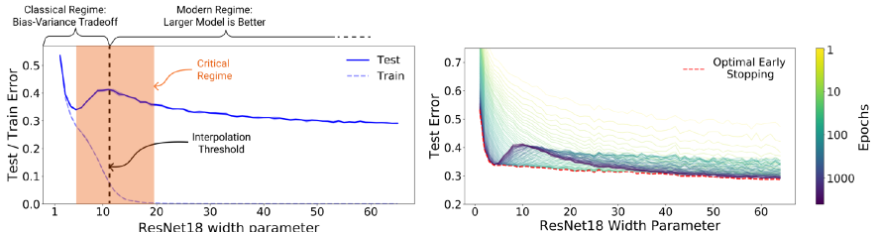
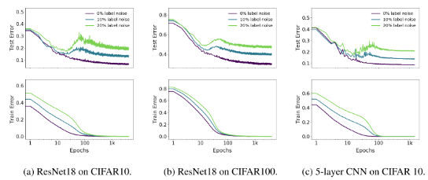
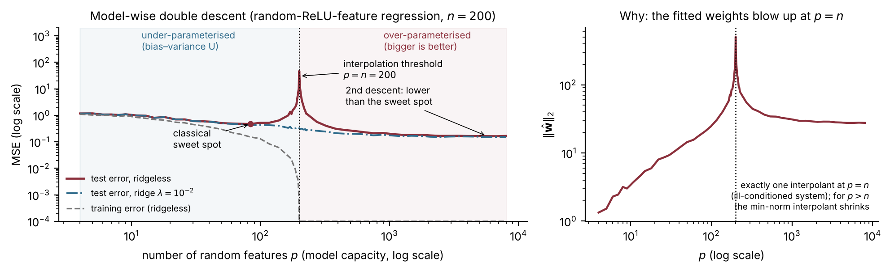
It does not say bigger is always better. In the critical regime, more parameters, more epochs, or even more data (which moves the threshold) can hurt.
Few units often suffice. On $[-1,1]$:
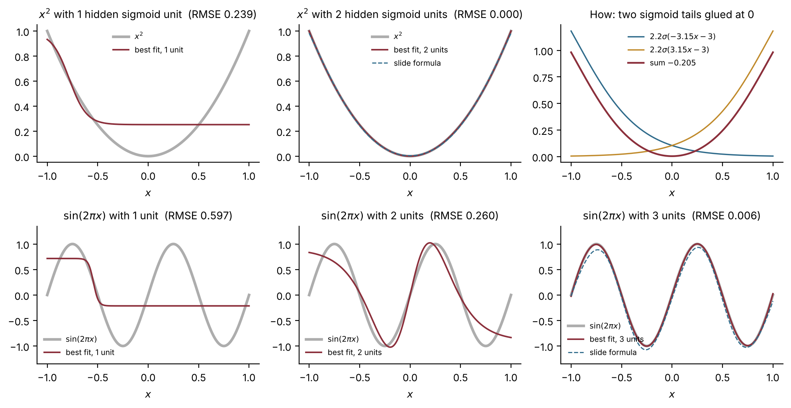
A single-hidden-layer MLP with a bounded, continuous, monotonically increasing activation (sigmoid, tanh) can approximate any continuous function arbitrarily well on a compact domain, given enough neurons. This extends to some unbounded activations: ReLU, truncated power. So activations are roughly equal in approximation power, but not in computational efficiency, ease of optimisation, or generalisation.
Universality is an existence result: it says nothing about how many neurons, whether GD will find the weights, or whether the fit generalises.
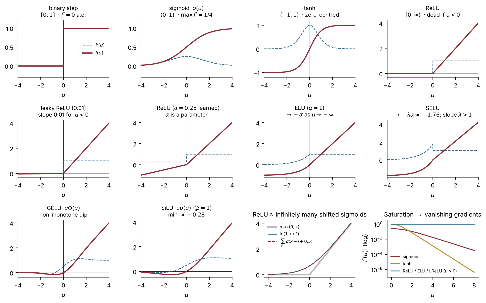
| Name | $f(u)$ | + | − |
|---|---|---|---|
| Binary step | $1$ if $u\ge0$ else $0$ | biologically appealing (all-or-none) | discontinuous; $f'=0$ a.e., so gradient learning fails |
| Sigmoid | $\frac1{1+e^{-u}}\in(0,1)$ | smooth, differentiable | saturates (vanishing gradients); exponentiation; not zero-centred |
| tanh | $\frac{e^u-e^{-u}}{e^u+e^{-u}}\in(-1,1)$ | as sigmoid, but zero-centred | saturation, exponentiation |
| ReLU | $\max(0,u)$ | no saturation for $u\gt0$; cheap; converges much faster; often generalises better | not zero-centred; dead ReLU: $u\lt0$ for all inputs means zero gradient forever |
| Leaky ReLU | $\max(0.01u,u)$ | never dies | slope fixed |
| PReLU | $\I(u\lt0)\alpha u+\I(u\ge0)u$ | slope $\alpha$ learned (CV tuning is tedious) | |
| ELU | $(u)_++\min(0,\alpha(e^u-1))$ | mean outputs nearer 0; negative saturation adds noise robustness | exponentiation |
| SELU | $\lambda[(u)_++\min(0,\alpha(e^u-1))]$, $\alpha\approx1.6733$, $\lambda\approx1.0507$ | self-normalising | needs specific init and inputs |
| GELU | $u\,\Phi(u)$ | smooth, slightly non-monotone; BERT/GPT | |
| SiLU / swish | $u\,\sigma(\beta u)$ | smooth; $\beta\to\infty$ gives ReLU |
With SELU, normalised inputs and weights $\sim\mathcal N(0,\frac1n)$, activations converge to zero mean and unit variance through the layers, so BN is not needed; variance is bounded above and below, so vanishing and exploding gradients are impossible. ($\alpha,\lambda$ make $(0,1)$ an attracting fixed point of the layer-to-layer mean/variance map.)
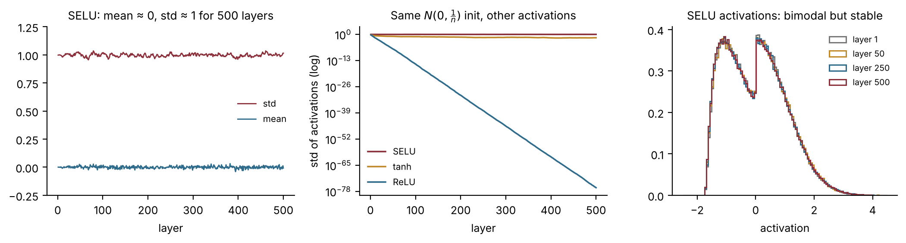
The guarantee needs all three: SELU, LeCun-normal $\mathcal N(0,\frac1n)$ weights, and normalised inputs. He init, BN or ordinary dropout break the argument. The ReLU collapse above is an init mismatch: He's $\mathcal N(0,\frac2n)$ fixes it.
| Name | $f(u)$ | $f'(u)$ |
|---|---|---|
| sigmoid | $\frac1{1+e^{-u}}$ | $f(1-f)$ |
| "tanh" (slide table) | $\frac{e^u-1}{e^u+1}$ | $\frac12(1-f^2)$ |
| tanh | $\tanh u$ | $1-f^2$ |
| ReLU | $\max(0,u)$ | $\I(u\gt0)$ |
| leaky ReLU | $\max(0.01u,u)$ | $0.01\I_{u\le0}+\I_{u\gt0}$ |
| PReLU ($\alpha\le1$) | $\max(\alpha u,u)$ | $\partial_u=\alpha\I_{u\le0}+\I_{u\gt0}$; $\partial_\alpha=u\I_{u\le0}$ |
| ELU | $u$ ($u\gt0$), $\alpha(e^u-1)$ ($u\le0$) | $1$ ($u\gt0$), $f+\alpha$ ($u\le0$) |
Each $f'$ is written in terms of $f$, e.g. ELU's $f'=f+\alpha=\alpha e^u$ reuses the forward-pass exponential.
Choosing: avoid exponentiation if time is critical; avoid saturating units if training gets stuck; ReLU is a good starting point; zero mean and unit variance is desirable (BN, SELU).
Theory says deeper nets have more capacity and should fit training data better. In practice a 56-layer plain net has higher training error than a 20-layer one on CIFAR-10 (He et al. 2016). That is not overfitting (training error is worse); it is an optimisation failure. Following the RNN lesson (design a better architecture, like LSTM): learn residuals.
Shapes must match for $f_\w(\x)+\x$: keep dimensions in fully connected blocks; for conv blocks either zero-pad and keep channels, or downsample and increase filters with a downsampling shortcut; in general use $f_\w(\x)+P\x$. GoogLeNet's $1\times1$ branch was already a shortcut, but ResNet's is a parameter-free identity that is added, not concatenated.
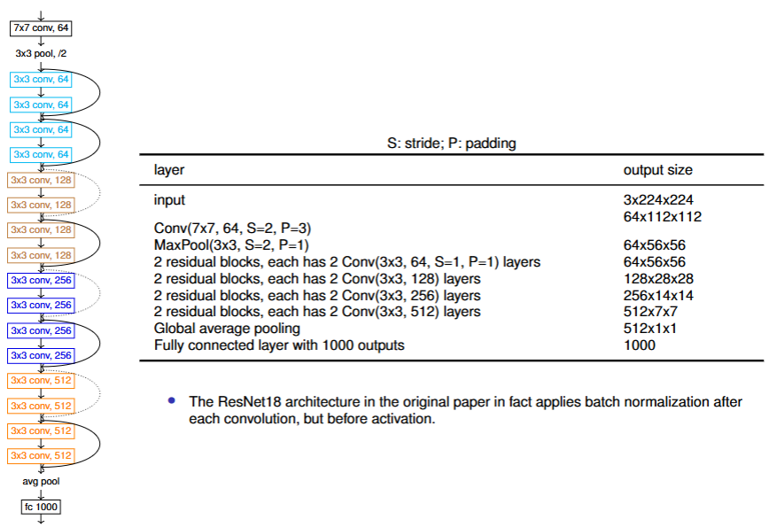
| Layer (S stride, P padding) | Output | Arithmetic |
|---|---|---|
| input | $3\times224\times224$ | |
| Conv $7\times7$, 64, S=2, P=3 | $64\times112\times112$ | $\lfloor(224+6-7)/2\rfloor+1=112$ |
| MaxPool $3\times3$, S=2, P=1 | $64\times56\times56$ | $\lfloor(112+2-3)/2\rfloor+1=56$ |
| 2 blocks × 2 Conv $3\times3$, 64 | $64\times56\times56$ | identity skips |
| 2 blocks, 128 (first conv S=2) | $128\times28\times28$ | $\lfloor(56+2-3)/2\rfloor+1=28$ |
| 2 blocks, 256 | $256\times14\times14$ | |
| 2 blocks, 512 | $512\times7\times7$ | |
| Global average pooling | $512\times1\times1$ | average each map |
| Fully connected | 1000 |
18 weighted layers (1 + 16 conv + 1 fc; pooling layers do not count). The first block of stages 3–5 uses a strided-conv shortcut to match size and channels. About 11.7M parameters, $1.8\times10^9$ FLOPs; 50+ layer versions use $1\times1\to3\times3\to1\times1$ bottleneck blocks.
The slides draw the downsampling shortcut as Conv($2\times2$, S=2, P=0): $(56-2)/2+1=28$. The paper and torchvision use a $1\times1$ conv with stride 2 (plus BN): $\lfloor55/2\rfloor+1=28$. Same output size; be consistent with the formula.
weight → BN → ReLU → weight → BN, add, then ReLU:
$\x_{\ell+1}=\relu(\x_\ell+f(\x_\ell))$
BN → ReLU → weight → BN → ReLU → weight, then add:
$\x_{\ell+1}=\x_\ell+f(\x_\ell)$
The $I$ term carries the gradient from the loss straight to every block; it cannot vanish through a product of small Jacobians. CIFAR-10, ResNet-1001: original 7.61% vs improved 4.92%. The original overfits around 200 layers; the improved design trains 1001 layers.
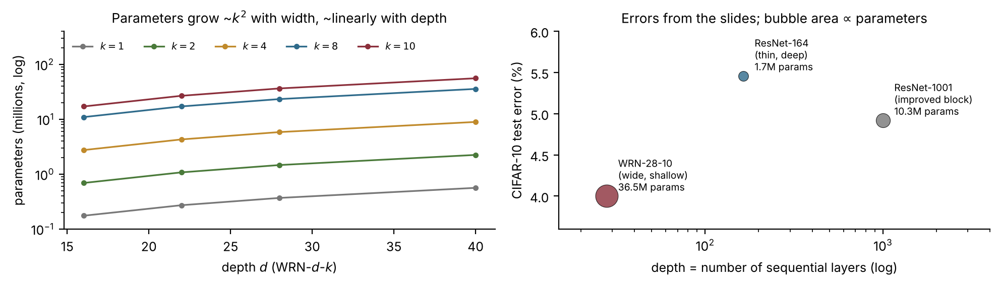
"Efficient" means wall-clock training time, not parameters: WRN-28-10 has about 36.5M parameters, ~20× ResNet-164's 1.7M.
Highway networks (Srivastava et al. 2015) gate the shortcut: $f_\w(\x)\odot T(\x)+\x\odot C(\x)$ with transform gate $T$ and carry gate $C$, typically $C=1-T$, so the block slides between the identity ($T=0$) and $f_\w(\x)$ ($T=1$). ResNet is the ungated case $T=C=1$.
"You see what you pay attention to." The brain receives masses of information but focuses on a small portion at a time and integrates the pieces (on translated MNIST we ignore the black background). The same mechanism can be built into networks.
Soft attention produces a distribution; hard attention picks one index (one-hot $\alpha$).
$\mathbf o$ is a convex combination of focused items. Soft attention is differentiable end to end; hard attention's index choice is not, so it needs sampling-based training. Scoring can be an MLP (captioning, translation), a dot product, or the Transformer's scaled dot product.
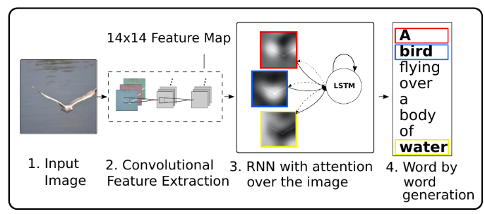
Items: feature vectors $\vv_1,\dots,\vv_L$ for $L=196$ image locations from a lower conv layer (the last fc layer has lost spatial information). Available information: $\h_{t-1}$, with $\h_0$ from an MLP on $\bar\vv=\frac1L\sum_i\vv_i$.
Uses of attention: better performance, interpretation ("a woman is throwing a frisbee": attention is on the frisbee) and explaining mistakes ("… on a skateboard": attention was on a region that looked like one).
The plain encoder–decoder (Week 6) uses the same context $c=h^e_n$ for every target word: a fixed-size bottleneck. Instead, learn to attend to relevant source words for each output word:
Alignment matrices (English → French) are mostly diagonal, but "zone économique européenne" attends to "European Economic Area" in reverse order.
The slide writes $c$, but it is recomputed every step: $c_t$ (and $\alpha_{t,i}$). The querying state is $h^d_{t-1}$, the state before producing $y_t$.
| RNN encoder–decoder | Transformer | |
|---|---|---|
| Representations | RNN | self-attention |
| Parallelism | step $t$ needs $t-1$: hard | positions independent: easy |
| Global dependencies | yes | yes |
Queries $Q\in\mathbb R^{n\times d_k}$ (available information); key–value pairs $K\in\mathbb R^{n\times d_k}$, $V\in\mathbb R^{n\times d_v}$ (keys for scoring, values as the focused views).
One query: $r_j=q_i\cdot k_j/\sqrt{d_k}$, $\alpha=\softmax(r)$, result $\sum_j\alpha_jv_j$. No learnable parameters; masking sets chosen $r_j$ to $-\infty$.
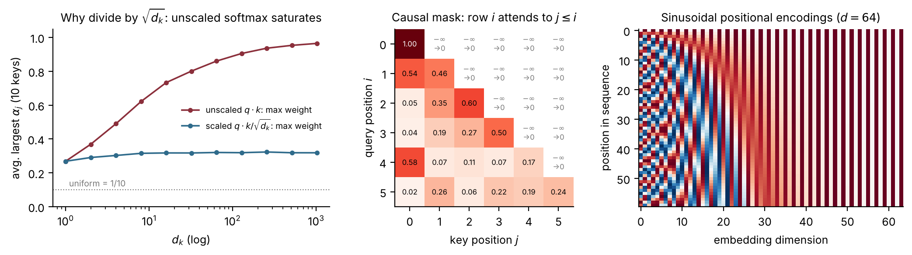
For independent unit-variance entries, $\Var(q\cdot k)=\sum_{m=1}^{d_k}\Var(q_mk_m)=d_k$. Dividing by $\sqrt{d_k}$ restores unit variance and keeps the softmax out of saturation: the same story as sigmoid saturation.
$W_i^Q,W_i^K\in\mathbb R^{d\times d_k}$, $W_i^V\in\mathbb R^{d\times d_v}$, $W^O\in\mathbb R^{hd_v\times d}$. With $d_k=d_v=d/h$ this has $4d^2$ parameters, like one full-width head (paper: $d=512$, $h=8$, $d_k=d_v=64$). Different heads learn different behaviours (one links "its" to "Law", another attends locally).
Cost per layer (length $n$, width $d$): self-attention $O(n^2d)$ operations, $O(1)$ sequential steps, $O(1)$ path length; recurrent $O(nd^2)$, $O(n)$ sequential, $O(n)$ path length.
def attention(Q, K, V, mask=None): # Q:(n,dk) K:(m,dk) V:(m,dv)
R = Q @ K.T / K.shape[-1] ** 0.5 # relevance scores (n,m)
if mask is not None: R = R.masked_fill(mask, float("-inf"))
return F.softmax(R, dim=-1) @ V # rows: convex combinations of values
causal = torch.triu(torch.ones(n, n, dtype=torch.bool), diagonal=1) # True above diagonal = masked
mha = torch.nn.MultiheadAttention(embed_dim=512, num_heads=8, batch_first=True)The in-lecture multiple-choice quizzes. Tick every statement you think is correct, then check — each option explains itself.
16 questions: 4 beginner, 5 intermediate, 4 advanced, 3 expert. Click a question to reveal the worked answer.
A single-hidden-layer MLP with a bounded, continuous, monotonically increasing activation (e.g. sigmoid, tanh), and also certain unbounded ones (ReLU), can approximate any continuous function on a compact set arbitrarily well with enough hidden units.
It does not say how many units are needed (possibly exponentially many), whether gradient descent will find the weights, how large the weights must be, or whether the fit will generalise. That is why activations are compared on efficiency, ease of optimisation and generalisation instead.
If a ReLU unit's pre-activation is negative for every training input (e.g. after a large update pushes its bias down), its output and gradient are 0 everywhere, so its weights never change again: it is dead.
Leaky ReLU uses $\max(0.01u,u)$: a small slope for $u\lt0$ keeps a nonzero gradient, so the unit can recover. PReLU makes that slope a learnable parameter $\alpha$, trained with the other weights, rather than tuning it by cross validation.
Overfitting means better training error but worse test error. The 56-layer plain net has worse training error than the 20-layer one, even though it could represent the 20-layer solution (by making the extra layers identities). So the problem is optimisation: SGD cannot find the good solution.
A residual block outputs $f_\w(\x)+\x$. If the ideal mapping is near the identity, the block only has to learn a small residual, and $\w\approx0$ already gives the identity. Depth then cannot make things worse by default, and the identity path also carries gradients straight through.
Soft: weights $\alpha_{1:K}=\softmax(r_{1:K})$, output a weighted average of all items; differentiable. Hard: select one item (one-hot $\alpha$); not differentiable, needs sampling-based training.
Uses: improving performance (captioning, translation), interpreting predictions (which image region produced "frisbee"), and explaining mistakes (attention on a region that looked like a skateboard).
ELU: $f(-1)=e^{-1}-1\approx-0.632$, $f'(-1)=f+\alpha=0.368=e^{-1}$, reusing the forward value.
$\sigma'(u)=\sigma(1-\sigma)$ is maximised at $\sigma=\frac12$, giving $\frac14$. Through 10 sigmoid layers the activation-derivative factors alone are at most $4^{-10}\approx10^{-6}$ (times weight factors), which is why deep sigmoid nets suffer vanishing gradients and ReLU-type units (with $f'=1$ for $u\gt0$) help.
Conv $7\times7$, S=2, P=3: $\lfloor(256+6-7)/2\rfloor+1=128$. MaxPool $3\times3$, S=2, P=1: $\lfloor(128+2-3)/2\rfloor+1=64$. Stage 2 keeps 64; stages 3, 4, 5 halve: $32,16,8$. Output $512\times8\times8$.
Global average pooling averages each of the 512 maps to one number regardless of spatial size, so the fc layer always receives 512 features. (Contrast LeNet in Week 5, where changing the input size changes the flattened dimension.)
Scores $q\cdot k_j/\sqrt2=(0.707,0,0.707)$. Softmax: $e^{0.707}=2.028$, so $\alpha=(2.028,1,2.028)/5.056=(0.401,0.198,0.401)$. Output $0.401(1,0)+0.198(0,1)+0.401(1,1)=(0.802,0.599)$.
Unscaled scores $(1,0,1)$: $\alpha=(0.422,0.155,0.422)$, output $(0.845,0.578)$, already sharper. In high dimensions the effect is dramatic: unscaled scores have variance $d_k$ and the softmax becomes nearly one-hot.
Per head: $W^Q_i,W^K_i,W^V_i$ are $512\times64$ each: $3\cdot32768=98304$. Eight heads: $786432$. Output projection $W^O$: $(8\cdot64)\times512=262144$. Total $1048576=4\cdot512^2$.
In general $h(2dd_k+dd_v)+hd_vd$ with $d_k=d_v=d/h$ gives $3d^2+d^2=4d^2$: splitting into heads costs nothing extra relative to one full-width head, but lets heads specialise.
Mask $M_{ij}=-\infty$ for $j\gt i$, 0 otherwise (positions 1–4):
Row 2 attends only to positions 1 and 2 (its softmax gives 0 weight to 3 and 4). In training, the whole right-shifted target is fed at once (teacher forcing), so without the mask position $i$ could look at the token it is meant to predict. With the mask, all positions are computed in one parallel pass yet each only sees its past: the same predictions as step-by-step generation would make.
$q\cdot k=\sum_{m=1}^{d_k}q_mk_m$. Each term has mean $\E q_m\E k_m=0$ and variance $\E[q_m^2k_m^2]-0=\E q_m^2\,\E k_m^2=1$. The terms are independent, so $\Var(q\cdot k)=d_k$ (the zero-mean product rule from Week 7's Xavier derivation).
So scores have standard deviation $\sqrt{d_k}$: for $d_k=512$, about 22. Softmax over such spread-out scores puts almost all mass on the largest, and its gradient w.r.t. the scores ($\operatorname{diag}(\alpha)-\alpha\alpha\T$) is then nearly 0: saturation and vanishing gradients. Dividing by $\sqrt{d_k}$ restores unit variance.
Unrolling: $\x_L=\x_\ell+\sum_{i=\ell}^{L-1}f(\x_i)$. Chain rule:
The gradient at any block contains $\partial E/\partial\x_L$ directly, through the identity. In a plain net it would be a product of $L-\ell$ Jacobians, which can vanish or explode. It is also unlikely to be cancelled exactly by the second term for a whole minibatch.
In the original block, $\x_{\ell+1}=\relu(\x_\ell+f(\x_\ell))$: the shortcut passes through a ReLU, whose Jacobian zeroes negative coordinates. Unrolling gives products of these masks, so the path is no longer a clean identity. Empirically: 7.61% vs 4.92% error at 1001 layers.
Let $X\in\mathbb R^{n\times d}$ be the input rows and $P$ a permutation matrix. With $Q=XW^Q$, $K=XW^K$, $V=XW^V$, permuting the input gives $PQ$, $PK$, $PV$. Then
since a row-wise softmax commutes with permuting rows and columns, and $P\T P=I$. The position-wise MLP and LayerNorm are also equivariant. So permuting the tokens just permutes the outputs: the model sees a set, and "dog bites man" and "man bites dog" get the same multiset of representations. Adding a position-dependent vector to each token breaks the symmetry.
Highway: $\mathbf y=f_\w(\x)\odot T(\x)+\x\odot C(\x)$ with sigmoid gates, usually $C=1-T$, so $\mathbf y=\x+T(\x)\odot(f_\w(\x)-\x)$: an input-dependent interpolation between the identity ($T=0$) and $f_\w(\x)$ ($T=1$).
Setting $T=C=1$ (no gates) gives ResNet's $f_\w(\x)+\x$. Setting $T=1,C=0$ gives a plain block. Gating costs extra parameters ($\w_T$ and, if separate, $\w_C$) and can partially close the shortcut ($C\approx0$), which reintroduces the vanishing-gradient path that ResNet's always-open identity avoids. This is the same idea as LSTM/GRU gates, applied across depth instead of time.
Below the threshold the classical picture holds: more capacity lowers bias and raises variance, giving a U. At the threshold (capacity just enough to interpolate, roughly $p\approx n$) there is essentially one interpolating solution. To pass through every noisy point it needs huge, finely balanced weights (the norm spike in Figure 9.3), so it oscillates wildly between data points: variance explodes. Beyond it, infinitely many interpolants exist and the algorithm chooses one: least squares picks the minimum-norm one, SGD from small initialisation has a similar implicit bias. Larger models allow smaller-norm, smoother interpolants, so variance falls again.
So the bias–variance decomposition still holds; what fails is the assumption that "complexity" = parameter count (Week 2 warned about this). The effective complexity of the selected function can fall as parameters grow. Week 8's tools act on exactly this: $\ell_2$ penalises the norm and flattens the peak; optimal early stopping limits how far the weights move and removes it (Nakkiran's red dashes). Label noise enlarges the peak because there is more irregularity to be forced through.
| Operations | Sequential steps | Path length | |
|---|---|---|---|
| Self-attention | $O(n^2d)$ | $O(1)$ | $O(1)$ |
| Recurrent | $O(nd^2)$ | $O(n)$ | $O(n)$ |
Attention is costlier in raw operations when $n\gt d$ (long sequences, e.g. $n=4096$ tokens with $d=512$): the $n\times n$ score matrix dominates time and memory.
It still trains faster because the $O(n^2d)$ work is a few large matrix multiplies done in parallel on a GPU, while the RNN's $O(n)$ steps must run one after another. And the $O(1)$ path length means any two positions interact directly, so gradients for long-range dependencies do not pass through $n$ multiplicative steps, avoiding Week 6's vanishing/exploding product.
In Bahdanau attention at decoder step $t$: the query is $h^d_{t-1}$; the keys and values are both the encoder states $h^e_i$; scores $r_i=r_\theta(h^d_{t-1},h^e_i)$ come from a small MLP; the context $c_t=\sum_i\alpha_ih^e_i$ is the attention output. The Transformer's encoder–decoder attention is the same structure: $Q$ from the decoder, $K,V$ from the encoder output.
Differences: the score is a scaled dot product $q\cdot k/\sqrt{d_k}$ of learned projections, so all queries and keys are scored with one matrix multiply instead of $n\times m$ MLP evaluations; and keys and values are separate projections ($W^K\ne W^V$), so "how to match" and "what to return" are decoupled. Multiple heads run several such attentions in parallel in lower-dimensional subspaces, at the same total cost $4d^2$, letting different heads capture different relations (syntax, coreference such as "its" → "Law", local context), where one softmax would have to average them.
Placeholders. These sections slot into the same format (notes, figures, lecture quizzes, graded question guide, formula sheet) once the notes are available.
Content for week 10 will be added when the notes are uploaded.
Content for week 11 will be added when the notes are uploaded.
Content for week 12 will be added when the notes are uploaded.
Content for week 13 will be added when the notes are uploaded.
Exam questions that carry the most marks usually ask you to connect ideas. These are the recurring patterns; each row points to where the idea appears.
| Thread | Where it shows up |
|---|---|
| Loss + regulariser | Ridge, regularised LR, soft-margin SVM (W1); ERM and MAP (W2, W8); weight decay and LASSO (W8); maximally activating images (W5) and the minimum-perturbation attack (W8), where the variable is the input instead of the weights. |
| (prediction − target) × input | Perceptron, Adaline, logistic updates (W3); backprop's $\delta_k=o_k-y$ (W4); $\nabla_o$ cross-entropy $=\softmax(o)-\mathbf e_y$ (W5). |
| Sum over paths | Backprop sums over children (W4); reverse-mode autodiff (W4); BPTT sums over weight copies (W6); conv weight sharing (W5); BN's three-term input gradient (W7). |
| Saturation ⇒ vanishing gradients | Sigmoid plateaux (W7); tanh in vanilla RNNs (W6); naive initialisation (W7); sigmoid nets kept linear by early stopping (W8); ReLU/SELU (W9); softmax saturation fixed by $1/\sqrt{d_k}$ (W9). |
| Products of many factors | RNN gradient recursion (W6); variance propagation and Xavier/He (W7); fixes: LSTM's additive cell (W6), residual identity paths (W9), auxiliary classifiers (W5), clipping (W6). |
| Capacity and bias–variance | Regularised mean (W1); $k$ in $k$NN (W1–2); PCA as a regulariser (W2); dropout as an ensemble (W8); early stopping (W8); double descent (W9). |
| Train mode $\ne$ test mode | Teacher forcing vs feeding back predictions (W6); BN batch vs running statistics (W7); dropout masks vs scaling (W8); Transformer decoder parallel in training, sequential at prediction (W9). |
| Learned gates | LSTM and GRU (W6); highway networks (W9); attention weights as a soft, input-dependent selection (W9). |
| Convention traps | $\sgn(0)$ (W3); labels $\pm1$ vs $\{0,1\}$ (W3); $L$ vs $\frac12L$ (W4); CNN "convolution" is cross-correlation (W5); GRU's $z_t$ orientation (W6); PyTorch weight_decay $=2\lambda$ (W8); dropout's $p$ = drop vs keep (W8). |
The same pattern is backprop's output delta $\delta_k=o_k-y$ times the incoming activation $o_i$ (W4). The losses differ only in what they compare with the target, which is exactly what decides behaviour on separable data (W3 surrogate-loss figure).
The unifying statement: if a variable influences the output through several intermediate nodes, its derivative is the sum over those nodes of (downstream derivative) × (local derivative).
| Setting | Factor per step/layer | Fixes |
|---|---|---|
| Vanilla RNN (W6) | $w_1(1-o_j^2)$: tanh derivative times recurrent weight | LSTM/GRU (factor becomes a learned gate $f_t$), truncated BPTT (accept short credit assignment), good init |
| Deep MLP (W7) | $n\Var(W)\cdot\E[g'(u)^2]$: variance gain per layer | Xavier/He init (gain $\approx1$), input normalisation, BN, non-saturating activations |
| Deep sigmoid nets (W9) | $\sigma'\le\frac14$ | ReLU family ($f'=1$ for $u\gt0$), SELU self-normalisation |
| Very deep CNNs (W9) | product of block Jacobians | residual identity: $\partial\x_L/\partial\x_\ell=I+\dots$ |
| Attention (W9) | softmax Jacobian when scores have variance $d_k$ | scale by $1/\sqrt{d_k}$ |
Two families of fix: keep each factor near 1 (initialisation, normalisation, activation choice, scaling) or add a path whose factor is exactly 1 (LSTM cell with $f_t\approx1$, residual identity). Exploding gradients come from the same products being above 1; clipping limits the damage but does not change the factors.
eval() makes predictions depend on test batch composition.eval() gives random predictions; forgetting the scaling (standard dropout) inflates activations.Common lesson: a model is only correct if the test-time computation matches the distribution of computations it was trained on.
The one-page recall from each week, in one place. Use it as a last pass before the exam: cover the right column and reproduce each formula.